RAIL 2024Traduction automatique
Le premier arbre de dépendances universel pour le Tswana : Tswana-Popapolelo
Traduction automatique, non relue par un humain. L'article original est la version de référence ; les phrases soulignées sont celles dont les contrôles automatiques n'étaient pas sûrs.
Proceedings of the Fifth Workshop on Resources for African Indigenous Languages @ LREC-COLING 2024.
Traduction par Ernst van Gassen (Arktos AI Lab), sous licence CC BY-NC 4.0 comme l'original. Réutilisation permise avec attribution, à usage non commercial uniquement. Les auteurs originaux n'ont pas relu ni approuvé cette traduction.
Texte brut réutilisable, avec sa licence : Français · LICENCE
Affiliations
Tanja Gaustad†, Ansu Berg‡, Rigardt Pretorius‡, Roald Eiselen†
†Centre for Text Technology (CTexT), ‡Setswana
North-West University, Potchefstroom, South Africa
Adresses e-mail retirées pour la protection de la vie privée. Elles figurent dans le PDF original.
Résumé
Cet article présente la première banque d'arbres UD accessible au public pour le Tswana, Tswana-Popapolelo. Les données utilisées consistent en 20 phrases du Cairo CICLing traduites en tswana. Après le prétraitement de ces phrases avec des POS détaillés (XPOS) et leur conversion en POS universels (UPOS), nous avons procédé à l'annotation des données avec des relations de dépendance, en documentant les décisions pour les constructions spécifiques à la langue. Les problèmes linguistiques rencontrés sont décrits en détail, car il s'agit de la première application du cadre UD pour produire un arbre-banc de dépendances pour la famille de langues bantoues en général et pour le tswana en particulier.
Mots-clés
Banque d'arbres de dépendance, annotation, langues bantoues, Tswana
1. Introduction
Avec une récente volonté d'élargir la diversité linguistique dans la recherche en traitement automatique du langage naturel (TALN) (Joshi et al., 2020), il y a eu un intérêt accru pour les annotations syntaxiques des langues sous-dotées d'Afrique subsaharienne, ce qui a abouti à des treebanks pour le bambara (Aplonova et Tyers, 2017 ; Dione, 2021), le beja (Kahane et al., 2021), le wolof et le yoruba (Dione, 2021). La seule ressource de ce type actuellement disponible pour le tswana est un treebank fondé sur la grammaire lexicale fonctionnelle (Berg, 2018) composé de syntagmes et de phrases simples (LR Berg, 2018).
Cet article décrit la première banque d’arbres Tswana-Popapolelo disponible publiquement et annotée dans le cadre de la dépendance universelle (de Marneffe et al., 2021). À titre de preuve de concept, nous avons choisi d'annoter un petit ensemble de données dans UD ainsi que de documenter les problèmes et décisions d'annotation linguistique lors de l'application de UD au tswana afin que, à l'avenir, plus de données puissent être annotées plus facilement.
Dans cet article, nous nous concentrerons sur la construction d'une banque d'arbres UD pour le tswana (voir la section 2 pour les informations de base nécessaires), en décrivant les données (section 3) et le prétraitement (section 4), le processus d'annotation (section 5) et, surtout, les problèmes que nous avons rencontrés (section 6) en essayant d'appliquer le cadre UD à une nouvelle langue (famille de langues).
2. Contexte
2.1. Contexte linguistique
Le tswana (ISO-639-3 tsn) est une langue bantoue parlée dans les parties nord-ouest de l'Afrique du Sud, les parties orientales de la Namibie qui bordent le Botswana et au Botswana, où c'est la langue nationale et la plupart des gens sont des locuteurs de langue maternelle. C'est l'une des 12 langues officielles d'Afrique du Sud et est parlée par 8,3 % de la population (Statistics South Africa, 2023), ce qui en fait la 6e langue maternelle la plus fréquente. Outre la langue des signes et deux langues germaniques (afrikaans et anglais), les langues officielles comprennent neuf langues bantoues: quatre langues nguni (ndebele, xhosa, zoulou et swazi), trois langues sotho (sotho du nord, sotho du sud, tswana), ainsi que le venḓa et le tsonga. Le tswana est classé dans la zone sud-est des langues bantoues. Ces langues bantoues sont divisées en groupes linguistiques et le tswana est inclus dans le groupe des langues sotho (groupe S31) (Maho, 2003).
Les langues bantoues présentent un certain nombre de caractéristiques linguistiques qui les distinguent sensiblement des langues indo-européennes les plus courantes (van der Velde et al., 2022) : ce sont toutes des langues à tons ; elles utilisent un système élaboré de classes nominales (Katamba, 2003) et leur morphologie nominale et verbale est hautement agglutinante et très productive (Katamba, 1993). Surtout les deux dernières caractéristiques sont importantes dans le contexte de l'annotation syntaxique.
Le choix du style d'écriture orthographique adopté pour le tswana a été influencé par des raisons historiques et phonologiques (Taljard et Bosch, 2006, 433). Phonologiquement, le fort caractère homographique des préfixes verbaux des langues sotho (y compris tswana) a conduit à l'adoption d'une orthographe disjonctive concernant les préfixes verbaux. Les langues nguni, en revanche, ont adopté un système d'écriture conjoint (Louwrens et Poulos, 2006). Dans ce contexte, une distinction est faite entre les mots linguistiques et les mots orthographiques. Pour des langues comme l'anglais ou l'afrikaans, un mot linguistique et un mot orthographique coïncident largement. Pour les langues écrites conjonctivement, un mot orthographique correspond à un ou plusieurs mots linguistiques. Pour les langues écrites de manière disjonctive comme le tswana, cependant, plusieurs mots orthographiques peuvent correspondre à un mot linguistique. L'exemple suivant illustre les styles d'écriture disjonctif (Tswana) versus conjonctif (Zulu) :
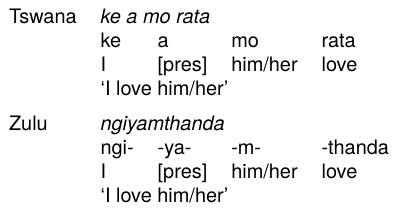
Les implications des préfixes verbaux écrits de manière disjonctive dans la description syntaxique du tswana seront discutées plus en détail dans la section 6.
2.2 Dépendances universelles (UD)
Universal dependencies (UD) est un projet international et collaboratif ayant deux objectifs principaux : développer un cadre commun décrivant la structure grammaticale des langues du monde (de Marneffe et al., 2021) et créer des treebanks pour diverses langues en appliquant ce cadre (Nivre et al., 2020). Le projet s'efforce de produire des treebanks cohérents d'un point de vue interlinguistique (avec des extensions spécifiques à la langue lorsque cela est nécessaire) décrivant les structures syntaxiques ainsi que les traits morphologiques. Ce cadre permet des comparaisons entre les langues (y compris les langues à ordre des mots libre), des recherches dans une perspective de typologie linguistique ainsi que le développement d'analyseurs syntaxiques multilingues. Comme indiqué dans l'introduction du projet UD : « Le schéma d'annotation est basé sur une évolution des dépendances (universelles) de Stanford (de Marneffe et al., 2021), des étiquettes universelles de catégorie grammaticale de Google (Petrov et al., 2012) et de l'interlingua Interset pour les jeux d'étiquettes morphosyntaxiques (Zeman, 2008). » Les relations syntaxiques dans UD sont représentées sous forme d'arbres de dépendance plutôt que d'arbres de structure syntagmatique, ce qui rend les données annotées plus faciles à utiliser et à interpréter dans les tâches en aval. Actuellement, il existe plus de 250 treebanks dans plus de 140 langues différentes disponibles.
Notre choix d'utiliser UD découle de l'utilisation prévue des banques d'arbres UD qui bénéficie à la fois aux communautés de recherche computationnelle et linguistique. Comme le soulignent de Marneffe et al. (2021), l'UD doit respecter un certain nombre de critères (concurrents) qui incluent a) des exigences linguistiques, comme atteindre un niveau d'annotation satisfaisant pour l'analyse linguistique de langues individuelles et être efficace pour mettre en évidence les similarités structurelles entre langues apparentées, b) des besoins computationnels, c'est-à-dire se prêter à une analyse syntaxique avec une exactitude élevée et soutenir les tâches aval en traitement automatique des langues, et, enfin et surtout, c) des impératifs pragmatiques, à savoir se prêter à une annotation rapide et cohérente par un annotateur humain et être facilement compréhensible par des utilisateurs non linguistes.
Un avantage supplémentaire de rejoindre une initiative comme UD est l'infrastructure disponible en termes de guides sur la manière de contribuer, de scripts de validation, de soutien de la communauté UD et de la visibilité, de la disponibilité et de la réutilisabilité des données annotées via des versions officielles.
3. Données : Corpus CICLing du Caire
Pour qu'une banque d'arbres UD soit incluse dans une publication officielle, elle doit contenir au moins 20 phrases et 100 mots. Cela peut très facilement être réalisé en traduisant les 20 exemples de phrases dans le Corpus CICLing du Caire dans la langue souhaitée, dans notre cas Tswana. L'utilisation de ces phrases a l'avantage supplémentaire qu'elles contiennent différentes constructions linguistiques, ce qui en fait un bon premier cas de test pour discuter de la façon d'annoter ces constructions dans la langue cible.
Après avoir obtenu les 20 phrases du Cairo CICLing, trois locuteurs natifs de tswana ont traduit toutes les données sans se consulter les uns les autres. Dans une deuxième étape, l'équipe tswana a décidé d'une traduction par consensus où un consensus sur les phrases traduites finales a été atteint après avoir considéré les traductions libres et mot à mot. Cela a ensuite servi d'entrée au prétraitement décrit ensuite.
4. Prétraitement : tokenisation, XPOS et UPOS
La tokenisation des 20 phrases traduites correspond aux mots orthographiques tels qu’ils sont utilisés dans l’orthographe officielle du tswana (Cole, 1955 ; Krüger, 2006). Nous discuterons plus en détail des ramifications et des différents choix potentiels dans la section 6.

Tableau 1: Aperçu des balises UPOS assignées dans les 20 phrases en tswana.
Un prérequis important lors de l'annotation des dépendances universelles est la présence des parties du discours (POS), plus spécifiquement des POS universelles (UPOS) (Petrov et al., 2012). L'ensemble d'étiquettes UPOS contient 17 étiquettes : 6 pour les classes ouvertes (noms, verbes, etc.), 8 pour les classes fermées (par exemple, pronoms, conjonctions) et 3 pour les éléments divers (tels que la ponctuation et les symboles).
Dans le travail très limité effectué sur Tswana, il n'y a pas encore de consensus sur la façon d'accommoder Tswana POS traditionnel dans UPOS et l'application des balises UPOS n'est pas toujours simple (Dione et al., 2023). Cependant, il existe des étiqueteurs morphosyntaxiques du tswana avec des jeux d'étiquettes plus étendus (Eiselen et Puttkammer, 2014 ; Puttkammer et al., 2018 ; Malema et al., 2020 ; Dibitso et al., 2022). Aux fins des annotations UD en tswana, le tokeniser NCHLT et le POS tagger ont été utilisés pour annoter les données avec des POS détaillés (généralement appelés XPOS en UD). Cet étiqueteur comprend 26 étiquettes principales et 188 étiquettes lorsqu'on inclut les informations de classe. Les étiquettes POS détaillées ont ensuite été converties en étiquettes UPOS sur la base d'un tableau de conversion. Le tableau 1 donne un aperçu de la répartition des étiquettes UPOS attribuées dans les données.
Même avec la tâche apparemment simple de réduire l'ensemble d'étiquettes XPOS à UPOS, il y a eu quelques décisions difficiles lors de la conversion, surtout pour ne pas surcharger une étiquette UPOS particulière (surtout PART particule) avec trop de catégories XPOS distinctes.
Le problème principal concernait les préfixes verbaux en Tswana. Comme mentionné précédemment, en raison du style d'écriture disjonctif, plusieurs classes de morphèmes verbaux sont écrites comme des mots séparés. Ces morphèmes sont également marqués séparément dans le schéma XPOS et comprennent les morphèmes concordants (morphèmes de sujet et d'objet), les morphèmes possessifs, négatifs, aspectuels et de temps. Les morphèmes de sujet et d'objet étaient traités respectivement comme des accords de sujet et d'objet dans XPOS. En l'absence d'équivalents directs disponibles dans les UPOS, ils ont été étiquetés comme PRON (pronom), tandis que les accords possessifs sont étiquetés comme PART (particule). Les morphèmes de temps et d'aspect (auxquels est attribuée l'étiquette MORPH dans le schéma XPOS) ont également été convertis en PART (particule) dans les UPOS, tandis que les marqueurs négatifs ont été convertis en ADV.

Tableau 2: Aperçu des relations de dépendance assignées dans les 20 phrases en tswana.
De plus, dans notre ensemble de balises XPOS détaillées, les idéophones ont reçu leur propre balise IDEO car ils sont considérés comme une classe de mots distincte exprimant une action, une manière ou une propriété par imitation sonore, mais n'exerçant pas toujours la même fonction syntaxique dans une phrase. Cependant, il n'y a pas de tel tag dans UPOS et aucune équivalence dans d'autres familles linguistiques dans le catalogue UD n'a été trouvée. Comme il n'y avait pas d'idéophones dans les phrases de CICLing du Caire en tswana, l'étiquette n'était pas nécessaire, mais dans les annotations ultérieures, nous considérerions l'étiquette ADV (adverbe) pour les idéophones en tswana.
L'avantage d'avoir à la fois les étiquettes XPOS et UPOS à notre disposition lors de l'annotation syntaxique est que les jetons hautement ambigus (homophones et morphosyntaxiquement ambigus, par exemple ka 'avec, sur, à travers', go 'verbe copulatif dans différents modes, à, vers+verbe, vers+lieu') peuvent être liés correctement plus facilement et que les étiquettes XPOS attribuées automatiquement ainsi que les étiquettes UPOS converties pourraient être corrigées si nécessaire.
5. Processus d'annotation
L'annotation syntaxique ainsi que les corrections des étiquettes UPOS ont été réalisées dans Arborator Grew (Guibon et al., 2020). Dans une première étape, les annoteurs ont vérifié les balises UPOS et XPOS et les ont corrigées le cas échéant. Ensuite, la structure syntaxique a été ajoutée progressivement: commencez par identifier la racine de chaque phrase, liez le sujet et l'objet (s), puis continuez à lier et à étiqueter les dépendances restantes. Lors de l'annotation, diverses options pour certaines constructions syntaxiques ont été discutées et documentées jusqu'à ce que les annotateurs s'accordent sur le lien préféré et les étiquettes de dépendance associées. Le tableau 2 donne un aperçu des relations de dépendance assignées.

Figure 1 : Phrase 1 avec un sujet ouvert.
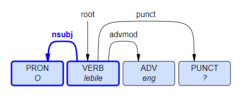
Figure 2 : Phrase 2 avec un sujet caché.
La banque d'arbres Tswana-Popapolelo sera disponible dans la prochaine version UD, ainsi que toute la documentation spécifique à la langue.
6. Problèmes rencontrés
Certaines des annotations étaient simples pour le petit ensemble de données actuel, mais les particularités linguistiques spécifiques du tswana en tant qu'exemple d'une langue bantoue disjonctivement écrite nécessitaient des discussions plus approfondies sur la façon d'utiliser les relations UD existantes. Celles-ci sont détaillées ci-dessous.
6.1. Orthographe disjonctive et constructions verbales en tswana
Comme cela a été décrit dans la section 2.1, un style d'écriture disjonctif a été adopté pour Tswana. Surtout pour les préfixes verbaux, cela signifie qu'un grand nombre de jetons orthographiques précédant le verbe seraient, dans la linguistique traditionnelle, considérés davantage comme des morphèmes que comme des "vrais" mots. L'identification correcte des mots est généralement considérée comme une étape de prétraitement impérative pour la description syntaxique. À cet égard, les préfixes verbaux écrits de manière disjonctive du tswana entraînent des jetons orthographiques qui font partie de mots linguistiques (Taljard et Bosch, 2006) et compromettent donc l'intégrité lexicale des verbes. Les préfixes verbaux du tswana portent une information flexionnelle tandis que les suffixes portent une information à la fois flexionnelle et dérivationnelle (Krüger, 2006, 268). Ces préfixes verbaux portent également des informations à la fois morphologiques et syntaxiques, ce qui rend difficile l'attribution de tags UPOS et de relations syntaxiques à ceux-ci.
Une solution évidente à ce problème est d'ajuster la tokenisation pour refléter les mots linguistiques, plutôt que les mots orthographiques. Bien que cela simplifierait certainement et alignerait davantage les données avec le cadre UD, cela réduirait également la granularité et l'informativité du treebank. En tenant compte de cela, nous avons choisi d'annoter les relations entre tous les mots orthographiques. Plus de détails sur les implications de la tokenisation sont fournis dans la section 6.5.
Dans l'annotation UD de Tswana, les préfixes verbaux écrits de manière disjonctive sont liés à la racine verbale via des arcs. Nous allons maintenant décrire comment les différentes parties des constructions verbales ont été traitées.
6.1.1 Concordances de sujets
Dans les cas où un sujet explicite est réalisé dans une phrase, le marqueur d'accord sujet est un indicateur d'accord qui marque la relation entre le sujet explicite et le verbe. Dans ces cas, nous avons opté pour la relation expl. Cette relation est utilisée en UD pour des phénomènes tels que le doublement clitique (par exemple dans les langues romanes) ou le doublement d'un clitique lexical nominal et d'un clitique pronominal (par exemple en grec et en bulgare). Bien que les accords de sujet ne soient pas les mêmes que les clitiques, ils se comportent de manière similaire en ce sens qu'ils sont une sorte de "copie" pronominale sans rôle sémantique propre. Un exemple pour le tswana peut être vu dans la figure 1 de la phrase 1.

Dans les cas où le sujet explicite n'est pas réalisé, le marqueur d'accord sujet (covert) acquiert un statut pronominal (comme il le serait en tant que pronom dans la traduction) et devient le sujet réel, il est donc annoté avec la relation nsubj comme montré dans la figure 2 de la phrase 2.

Figure 3 : Phrase 3 illustrant l'utilisation de la relation aux.

Figure 4 : Phrase 4 illustrant l'utilisation de la relation compound pour certains morphèmes TAME.

6.1.2. Verbes auxiliaires
Un verbe auxiliaire enrichit la signification du verbe principal complémentaire, du verbe copulatif ou d'une autre phrase verbale auxiliaire et peut ajouter des informations sémantiques concernant le mode, le temps, l'aspect et / ou la polarité d'un verbe. Il ajoute également des informations sur la progression ou l'achèvement d'une action: Il exprime un certain type de durée de l'action ou il exprime le temps logique auquel l'action est exécutée. Par exemple, le verbe auxiliaire ne exprime un temps passé relatif indiquant que l'action était en train de se dérouler ou s'était déroulée à un moment donné dans le passé. Si le verbe complémentaire est au temps présent, cela indique alors une action incomplète et se poursuivant à un certain moment dans le passé. Si le verbe complémentaire est au parfait, cela indique que l'action avait été achevée au point de référence (Pretorius, 1997; Krüger, 2013a).
En UD, les verbes auxiliaires sont une classe fermée qui ne peut pas avoir d'enfants. La relation aux est utilisée en tswana pour indiquer la relation entre un verbe et le verbe auxiliaire précédent, comme avec les autres langues. Cependant, nous avons rencontré le problème des auxiliaires prenant un accord de sujet (doublé) comme dépendant. Dans la phrase 3, l'accord sujet apparaît deux fois : une fois (réalisé comme o) avec l'auxiliaire ne et une fois (réalisé comme a) avec le verbe dira, mais tous deux renvoient au sujet « she » et tous deux sont nécessaires pour que la phrase soit grammaticale.

Elle a fait laver la voiture par son mari. '
À ce stade, nous avons choisi d'annoter l'accord sujet avec le verbe auxiliaire par une relation expl, tandis que l'accord sujet avec le verbe principal devient le nsubj et la relation entre l'auxiliaire et le verbe principal est étiquetée aux, comme on peut le voir dans la figure 3.
6.1.3. Morphèmes TAME
Les morphèmes de Temps-Aspect-Mode-Évidentialité (TAME) écrits de manière disjonctive dans la structure morphologique d'un verbe apparaissent toujours dans un ordre fixe et ne sont pas morphosyntaxiquement flexibles. Pour les morphèmes TAME incluant le morphème du temps présent a, le morphème progressif sa « encore », le morphème potentiel ka « peut, pourrait » et le morphème du temps futur tla « sera, devra », la relation compound est appliquée pour exprimer qu'il s'agit d'une combinaison de lexèmes qui se comportent morphosyntaxiquement comme des mots uniques. Voir l'exemple dans la phrase 4 et la figure 4.

Pour les morphèmes négatifs ga, sa, se, nous avons choisi d'utiliser la combinaison de ADV et advmod, parallèlement à l'anglais, comme illustré dans la phrase 5 et la figure 5.
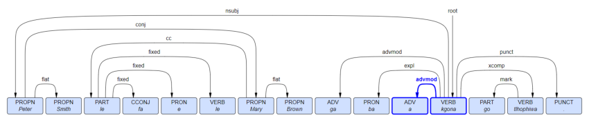
Figure 5: Phrase 5 montrant l'utilisation de la relation advmod pour les morphèmes de négation TAME.
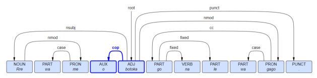
Figure 6 : Phrase 6 avec un verbe copulatif descriptif.
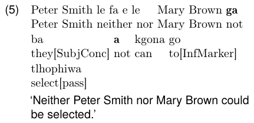
6.2 Copulatifs
Une copule est la relation d'un mot-fonction utilisé pour lier un sujet à un prédicat non verbal. En tswana, on distingue trois types de verbes copulatifs :
- copulative identificatrice : identifie un sujet en ce qui concerne le type, le statut ou la profession, ou prédique l'existence ou la présence d'une chose, par ex. Lekwalo lê ke la gago 'Cette lettre est la tienne' ;
- copulatif décrivant: établit une qualité, une caractéristique ou un état d'un sujet, ou sa situation ou sa localité, par exemple Ditlhako tsa me di dintšha 'Mes chaussures sont neuves';
- copulative associative : exprime l'idée du 'have' ou 'be with' anglais et indique la possession ou l'association, par ex. Sediba sê se na le metsi 'Ce puits a de l'eau'.
La structure morphologique de ces verbes peut inclure des informations sur le temps, l'aspect, le mode et la polarité.
Lorsque le verbe en tswana est un verbe copulatif d'identification ou de description, la racine de la proposition est le complément du verbe copulatif. Ces deux types de verbes copulatifs sont étiquetés en POS comme AUX, et la relation cop est utilisée entre la racine et le verbe copulatif qui précède. Voir la phrase 6 et la figure 6 pour un exemple de copulatif décrivant.
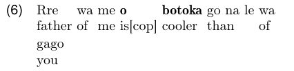
« Mon père est plus cool que le tien. »
Dans le cas d'un verbe copulatif associatif, la racine de la clause est le verbe copulatif. Les verbes copulatifs associatifs en tswana sont étiquetés en POS comme VERB, et la relation obj est utilisée entre la racine et le complément qui le suit, comme illustré dans la phrase 7 et la figure 7. Cette analyse diffère des descriptions linguistiques traditionnelles du Tswana (Cole, 1955; Krüger, 2006, 2013b).
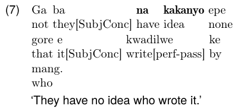
6.3. Utilisation de la relation mark
Les conjonctions qui marquent une clause comme subordonnée à une autre clause sont annotées comme marque en UD. En tswana, le marqueur est un élément introducteur d'une proposition qui inclut une action au subjonctif ou au mode participial. Pour le subjonctif, la conjonction gore « que, afin que » est utilisée, comme indiqué dans la phrase 8 et la figure 8. Pour le participe, des conjonctions telles que fa « alors que, tandis que, lorsque, si », le fa « même si, bien que, tandis que » et ka « puisque » sont utilisées.

Figure 7 : Phrase 7 avec un verbe associatif copulatif.
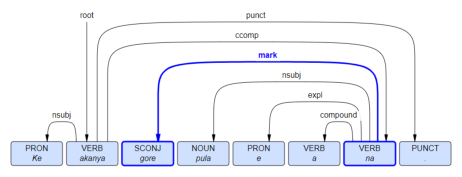
Figure 8: Phrase 8 montrant l'utilisation de la relation de marque pour une clause subordonnée.
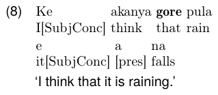
La relation de marque est également utilisée en tswana pour les verbes à l'infinitif, de manière analogue à l'anglais et à l'allemand, par exemple go tlogela 'arrêter' où le marqueur est go 'à'. Voir la phrase 9 et la figure 9 pour une illustration.
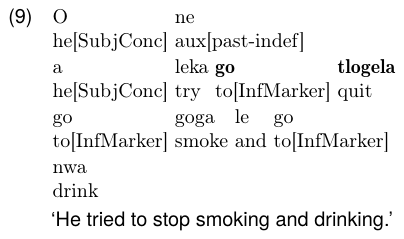
De plus, mark est utilisé dans une proposition relative où la particule qualificative est le marqueur, comme on le voit dans la phrase 10 et la figure 10 : la particule qualificative s'accorde toujours avec une classe nominale spécifique en tswana, par exemple dans e kgolo « [part] grand » le marqueur est la particule qualificative e qui indique l'accord de classe nominale 9.

6.4 Particules d'interrogation a
Dans Tswana il y a une particule interrogative a ajoutée au début d'une phrase pour changer une phrase indicative en une phrase interrogative. Après consultation avec la communauté UD, nous avons décidé d'attribuer l'étiquette UPOS PART (particule) à a ainsi que de la lier directement à la racine de la phrase avec une relation de discours (en suivant l'exemple latin de ne). Comme cette particule opère à un niveau plus pragmatique, la relation discourse « utilisée pour les interjections et autres particules et éléments de discours (qui ne sont pas clairement liés à la structure de la phrase, sauf de manière expressive) » telle que décrite dans l'aperçu des relations d'UD a semblé le meilleur choix. La phrase 11 et la figure 11 en donnent un exemple pour Tswana.
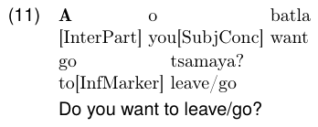
6.5 Tokenisation en tswana
Un problème que nous n’avons certainement pas encore résolu et qui est lié à la section précédente 6.1 est la tokenisation du tswana. Traditionnellement, les analyses informatiques pour les langues bantoues sud-africaines à écriture disjonctive, c'est-à-dire le sotho du nord, le sotho du sud, le tswana, le venḓa et le tsonga, ont été faites sur des mots orthographiques car aucune conversion n'est alors nécessaire à partir du texte original. Les implications de choisir d'utiliser des mots orthographiques plutôt que des mots linguistiques, cependant, seront ressenties à différents niveaux lors du travail sur l'analyse syntaxique de Tswana appliquant des dépendances UD:
- Lors de l'annotation : travailler sur le mot orthographique signifie que plus de temps et d'efforts seront consacrés à obtenir correctement les UPOS ainsi que les relations de dépendance (toutes deux relevant davantage du niveau syntaxique). Avec des mots linguistiques, la structure syntaxique devient plus directe (plus simple ?), mais en même temps, il faut accorder plus d'attention à l'ajout d'informations morphologiques pour conserver les détails nécessaires pour pouvoir désambiguïser.
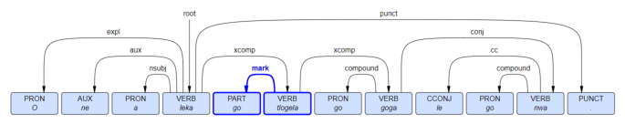
Figure 9 : Phrase 9 illustrant l'utilisation de la relation de marque dans les infinitifs.
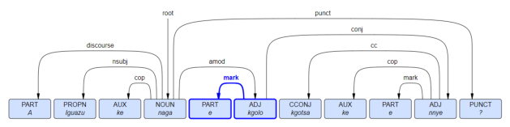
Figure 10 : Phrase 10 illustrant l'utilisation de la relation mark pour les particules qualificatives.
- D'un point de vue de la linguistique computationnelle: Spécifiquement dans le cadre de l'UD, si le texte tswana est analysé en utilisant des mots orthographiques, les annotations résultantes le rendent plus directement comparable aux langues européennes et les annotations syntaxiques seront plus diverses et informatives. D'autre part, l'utilisation de mots linguistiques mettra davantage l'accent sur les similitudes avec d'autres langues bantoues, en particulier écrites conjonctivement, mais la structure syntaxique sera plus simple car beaucoup d'informations ne seront contenues qu'au niveau morphologique (sous-mot).
- En relation avec les analyses linguistiques : dans les descriptions grammaticales traditionnelles (structurales), la frontière gauche des verbes tswana est considérée comme étant le premier préfixe d'un tel verbe, même s'il est écrit de manière disjonctive. Cela implique que des verbes tels que ke a mo rata en 2.1 seraient tokenisés comme un seul mot, à savoir un verbe. Ce verbe constituerait une phrase en soi et serait le prédicat de la phrase. L'analyse syntaxique de la phrase n'indiquerait donc pas la valeur pronominale des accords sujet et objet afin d'indiquer que la phrase contient un sujet et un objet (Taljard et Bosch, 2006 ; Louwrens et Poulos, 2006 ; Krüger, 2006 ; Cole, 1955 ; Pretorius et al., 2015). Dans les descriptions ultérieures (Berg, 2018), l'intégrité lexicale du verbe est maintenue mais le statut d'argument de ces accords est indiqué au niveau fonctionnel.
Donc, si nous devions décider d'"attacher" des préfixes verbaux au verbe, la structure originale en 12 basée sur des mots orthographiques changerait à la représentation en 13.

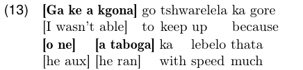
Je n'ai pas pu suivre, car il courait trop vite. '
Nous pensons qu'il est nécessaire de faire plus de travail pour explorer où tracer les limites lors de l'"attachement" des préfixes verbaux ainsi que pour comprendre pleinement les conséquences d'une telle approche.
7. Conclusion et travaux futurs
Cet article contient la description de la première banque d'arbres UD disponible publiquement pour le Tswana, basée sur les 20 phrases traduites du Cairo CICLing. La banque d'arbres qui en résulte montre qu'il s'agissait d'une première tentative réussie d'appliquer l'UD à une langue bantoue et constitue la base d'une annotation ultérieure du tswana à un ensemble plus étendu. Le principal avantage de commencer avec un ensemble de données aussi restreint est que bon nombre des annotations les plus problématiques peuvent être discutées en détail et que les résultats correspondants peuvent être documentés sans qu’il soit nécessaire de procéder à une réannotation substantielle des données à un stade ultérieur. Comme on pouvait s'y attendre, tous les problèmes n'ont pas encore été résolus et certaines décisions ont dû être prises sur la manière d'appliquer au mieux le cadre existant à une nouvelle langue aux caractéristiques linguistiques uniques. Nous espérons que le rapport détaillé sur les problèmes rencontrés aidera également les autres lors de l'annotation de nouvelles langues sotho et bantoues en UD.
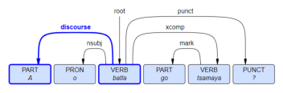
Figure 11 : Phrase 11 avec une particule interrogative.
Avec la banque d'arbres Tswana-Popapolelo maintenant disponible, nous prévoyons d'annoter des données supplémentaires avec l'aide d'assistants étudiants. Les annotations actuelles sont basées sur notre compréhension de la littérature et des commentaires que nous avons reçus de la communauté UD, mais les choix effectués jusqu'à présent seront certainement affinés et les données annotées disponibles pour Tswana seront élargies en les ajoutant à Tswana-Popapolelo. Cela comprend l'expérimentation de différentes stratégies de tokenisation pour les mêmes données afin d'étudier les répercussions sur les analyses de dépendance.
Une fois qu'un plus grand ensemble de données de treebank sera disponible, nous entraînerons également des analyseurs syntaxiques automatiques pour pré-annoter les données afin d'assister et de simplifier le processus d'annotation. À terme, nous visons à disposer de suffisamment de données pour entraîner des analyseurs syntaxiques en dépendances complets et précis, y compris des étiqueteurs XPOS, UPOS, de lemmes et morphologiques, tout en tirant parti des travaux d'autres personnes qui utilisent les treebanks UD pour entraîner divers outils de TAL.
8. Remerciements
Nous aimerions remercier Kevin Mavalela et Kaboentle Maibi pour leur contribution aux traductions et aux discussions et annotations initiales. De plus, nous sommes reconnaissants envers la communauté UD pour leurs réponses à nos questions.
Notes
1 Nous utiliserons le terme Tswana, car c'est le terme préféré dans un cadre international plutôt que Setswana, qui est généralement utilisé en Afrique du Sud (comme le stipule la Constitution sud-africaine de 1996 et la loi sur l'utilisation des langues officielles 12 de 2012). La même décision de ne pas utiliser de préfixes s'applique aux noms des autres langues officielles d'Afrique du Sud dans cet article.
2 https://universaldependencies.org/introduction.html, retrieved 12-02-2024.
3 Voir https://universaldependencies.org/ pour un aperçu.
4 https://github.com/UniversalDependencies/cairo/blob/master/translations.txt
5 Ceux-ci étaient des étudiants diplômés payés pour leur temps.
6 Le tswana a été inclus dans l'étiqueteur UDMorph https://lindat.mff.cuni.cz/services/teitok-live/udmorph/index.php?action=tag, mais la conversion du jeu d'étiquettes POS détaillées vers les UPOS n'a pas (encore) été vérifiée par des linguistes.
7 https://arboratorgrew.elizia.net/
8 https://github.com/UniversalDependencies/UD_Tswana-Popapolelo
9 Toutes les figures ont été produites avec http://www.let.rug.nl/kleiweg/conllu/.
10 Le sens du verbe auxiliaire ne exige la forme consécutive du morphème d'accord sujet qui le suit.
11 https://universaldependencies.org/u/dep/all.html#al-u-dep/discourse.
9. Références bibliographiques
Ekaterina Aplonova and Francis M. Tyers. 2017. Towards a dependency-annotated treebank for Bambara. In Proceedings of the 16th International Workshop on Treebanks and Linguistic Theories, pages 138-145, Prague, Czech Republic.
Ansu Berg. 2018. A computational syntactic analysis of Setswana. Ph.D. thesis, North-West University, Potchefstroom, South Africa.
Desmond T. Cole. 1955. An introduction to Tswana grammar. Longman, Cape Town.
Marie-Catherine de Marneffe, Christopher D. Manning, Joakim Nivre, and Daniel Zeman. 2021. Universal Dependencies. Computational Linguistics, 47(2):255-308.
Mary Dibitso, Pius A. Owolawi, and Sunday O. Ojo. 2022. An hybrid part of speech tagger for Setswana language using a voting method. In International Conference on Intelligent and Innovative Computing Applications, pages 245-253.
Cheikh M. Bamba Dione. 2021. Multilingual dependency parsing for low-resource African languages: Case studies on Bambara, Wolof, and Yoruba. In Proceedings of the 17th International Conference on Parsing Technologies and the IWPT 2021 Shared Task on Parsing into Enhanced Universal Dependencies (IWPT 2021), pages 84-92, Online. Association for Computational Linguistics.
Cheikh M. Bamba Dione, David Ifeoluwa Adelani, Peter Nabende, Jesujoba O. Alabi, Thapelo Sindane, Happy Buzaaba, Shamsuddeen Hassan Muhammad, Chris Chinenye Emezue, Perez Ogayo, Anuoluwapo Aremu, Catherine Gitau, Derguene Mbaye, Jonathan Mukiibi, Blessing Sibanda, Bonaventure F. P. Dossou, Andiswa Bukula, Rooweither Mabuya, Allahsera Auguste Tapo, Edwin Munkoh-Buabeng, Victoire Memdjokam Koagne, Fatoumata Ouoba Kabore, Amelia Taylor, Godson Kalipe, Tebogo Macucwa, Vukosi Marivate, Tajuddeen Gwadabe, Mboning Tchiaze Elvis, Ikechukwu Onyenwe, Gratien Atindogbe, Tolulope Adelani, Idris Akinade, Olanrewaju Samuel, Marien Nahimana, Théogène Musabeyezu, Emile Niyomutabazi, Ester Chimhenga, Kudzai Gotosa, Patrick Mizha, Apelete Agbolo, Seydou Traore, Chinedu Uchechukwu, Aliyu Yusuf, Muhammad Abdullahi, and Dietrich Klakow. 2023. MasakhaPOS: Part-of-speech tagging for typologically diverse African languages. In Proceedings of the 61st Annual Meeting of the Association for Computational Linguistics Volume 1: Long Papers, pages 10883-10900.
Roald Eiselen and Martin J. Puttkammer. 2014. Developing text resources for ten South African languages. In Proceedings of the Ninth International Conference on Language Resources and Evaluation (LREC 2014), pages 3698-3703.
Gaël Guibon, Marine Courtin, Kim Gerdes, and Bruno Guillaume. 2020. When collaborative treebank curation meets graph grammars. In Proceedings of the 12th Language Resources and Evaluation Conference, pages 5291-5300, Marseille, France. European Language Resources Association.
Pratik Joshi, Sebastin Santy, Amar Budhiraja, Kalika Bali, and Monojit Choudhury. 2020. The state and fate of linguistic diversity and inclusion in the NLP world. In Proceedings of the 58th Annual Meeting of the Association for Computational Linguistics, pages 6282-6293, Online. Association for Computational Linguistics.
Sylvain Kahane, Martine Vanhove, Rayan Ziane, and Bruno Guillaume. 2021. A morph-based and a word-based treebank for Beja. In Proceedings of the 20th International Workshop on Treebanks and Linguistic Theories (TLT, SyntaxFest 2021), pages 48-60, Sofia, Bulgaria. Association for Computational Linguistics.
Francis Katamba. 1993. Morphology. Springer, New York.
Francis Katamba. 2003. Bantu nominal morphology. In Derek Nurse and Gérard Philippson, editors, The Bantu Languages, pages 103-120. Routledge, London & New York.
Caspar J.H. Krüger. 2006. Introduction to the morphology of Setswana. Lincom Europe, München.
Caspar J.H. Krüger. 2013a. Setswana syntax: a survey of word group structures: Volume 1. Lincom Europe, München.
Caspar J.H. Krüger. 2013b. Setswana syntax: a survey of word group structures: Volume 2. Lincom Europe, München.
Louis J. Louwrens and George Poulos. 2006. The status of the word in selected conventional writing systems - the case of disjunctive writing. Southern African Linguistics and Applied Language Studies, 24(3):389-401.
Jouni Maho. 2003. A classification of the Bantu languages: an update of Guthrie's referential system. In Derek Nurse and Gérard Philippson, editors, The Bantu Languages, pages 639-651. Routledge, London & New York.
Gabofetswe Malema, Boago Okgetheng, Bopaki Tebalo, Moffat Motlhanka, and Goaletsa Rammidi. 2020. Complex Setswana parts of speech tagging. In Proceedings of the first workshop on Resources for African Indigenous Languages (RAIL), pages 21-24.
Joakim Nivre, Marie-Catherine de Marneffe, Filip Ginter, Jan Hajič, Christopher D. Manning, Sampo Pyysalo, Sebastian Schuster, Francis Tyers, and Daniel Zeman. 2020. Universal Dependencies v2: An evergrowing multilingual treebank collection. In Proceedings of the 12th Language Resources and Evaluation Conference, pages 4034-4043, Marseille, France. European Language Resources Association.
Slav Petrov, Dipanjan Das, and Ryan McDonald. 2012. A universal part-of-speech tagset. In Proceedings of the Eighth International Conference on Language Resources and Evaluation (LREC'12), pages 2089-2096, Istanbul, Turkey. European Language Resources Association (ELRA).
Laurette Pretorius, Biffie Viljoen, Ansu Berg, and Rigardt Pretorius. 2015. Tswana finite state tokenisation. Language Resources and Evaluation, 49(4):831-856.
Rigardt Pretorius. 1997. Auxiliary Verbs as a Subcategory of the Verb in Tswana. Ph.D. thesis, PU for CHE, Potchefstroom, South Africa.
Martin Puttkammer, Roald Eiselen, Justin Hocking, and Frederik Koen. 2018. NLP web services for resource-scarce languages. In Proceedings of ACL 2018, System Demonstrations, pages 43-49, Melbourne, Australia. Association for Computational Linguistics.
Department of Statistics South Africa. 2023. Census 2022: Statistical release. Technical report, Department of Statistics, Republic of South Africa.
Elsabé Taljard and Sonja E. Bosch. 2006. A comparison of approaches to word classtagging: Disjunctively vs. conjunctively written Bantu languages. Nordic Journal of African Studies, 15(4):428-442.
Mark van der Velde, Koen Bostoen, Derek Nurse, and Gérard Philippson, editors. 2022. The Bantu Languages, 2nd edition. Routledge, London & New York.
Daniel Zeman. 2008. Reusable tagset conversion using tagset drivers. In Proceedings of the Sixth International Conference on Language Resources and Evaluation (LREC'08), Marrakech, Morocco. European Language Resources Association (ELRA).
10. Références des ressources linguistiques
LR Berg, Ansu. 2018. Setswana Test suite and Treebank. South African Centre for Digital Language Resources (SADiLaR). PID https://hdl.handle.net/20.500.12185/478.
English et Français
The First Universal Dependency Treebank for Tswana: Tswana-Popapolelo
Le premier arbre de dépendances universel pour le Tswana : Tswana-Popapolelo
Affiliations
Tanja Gaustad†, Ansu Berg‡, Rigardt Pretorius‡, Roald Eiselen†
†Centre for Text Technology (CTexT), ‡Setswana
North-West University, Potchefstroom, South Africa
Affiliations
Tanja Gaustad†, Ansu Berg‡, Rigardt Pretorius‡, Roald Eiselen†
†Centre for Text Technology (CTexT), ‡Setswana
North-West University, Potchefstroom, South Africa
Abstract
Résumé
This paper presents the first publicly available UD treebank for Tswana, Tswana-Popapolelo. The data used consists of the 20 Cairo CICLing sentences translated to Tswana. After preprocessing these sentences with detailed POS (XPOS) and converting them to universal POS (UPOS), we proceeded to annotate the data with dependency relations, documenting decisions for the language specific constructions. Linguistic issues encountered are described in detail as this is the first application of the UD framework to produce a dependency treebank for the Bantu language family in general and for Tswana specifically.
Cet article présente la première banque d'arbres UD accessible au public pour le Tswana, Tswana-Popapolelo. Les données utilisées consistent en 20 phrases du Cairo CICLing traduites en tswana. Après le prétraitement de ces phrases avec des POS détaillés (XPOS) et leur conversion en POS universels (UPOS), nous avons procédé à l'annotation des données avec des relations de dépendance, en documentant les décisions pour les constructions spécifiques à la langue. Les problèmes linguistiques rencontrés sont décrits en détail, car il s'agit de la première application du cadre UD pour produire un arbre-banc de dépendances pour la famille de langues bantoues en général et pour le tswana en particulier.
Keywords
Mots-clés
Dependency treebank, annotation, Bantu languages, Tswana
Banque d'arbres de dépendance, annotation, langues bantoues, Tswana
1. Introduction
1. Introduction
Along with a recent push to broaden the linguistic diversity in Natural Language Processing (NLP) research (Joshi et al., 2020), there has been an increased interest in syntactic annotations for underresourced languages from Sub-Saharan Africa resulting in treebanks for Bambara (Aplonova and Tyers, 2017; Dione, 2021), Beja (Kahane et al., 2021), Wolof, and Yoruba (Dione, 2021). The only such resource currently available for Tswana is a treebank based on Lexical Functional Grammar (Berg, 2018) consisting of phrases and simple sentences (LR Berg, 2018).
Avec une récente volonté d'élargir la diversité linguistique dans la recherche en traitement automatique du langage naturel (TALN) (Joshi et al., 2020), il y a eu un intérêt accru pour les annotations syntaxiques des langues sous-dotées d'Afrique subsaharienne, ce qui a abouti à des treebanks pour le bambara (Aplonova et Tyers, 2017 ; Dione, 2021), le beja (Kahane et al., 2021), le wolof et le yoruba (Dione, 2021). La seule ressource de ce type actuellement disponible pour le tswana est un treebank fondé sur la grammaire lexicale fonctionnelle (Berg, 2018) composé de syntagmes et de phrases simples (LR Berg, 2018).
This paper describes the first publicly available Tswana treebank Tswana-Popapolelo annotated in the Universal Dependency (UD) framework (de Marneffe et al., 2021). As a proof of concept, we chose to annotate a small data set in UD as well as document linguistic annotation issues and decisions when applying UD to Tswana so that going forward more data can be annotated more easily.
Cet article décrit la première banque d’arbres Tswana-Popapolelo disponible publiquement et annotée dans le cadre de la dépendance universelle (de Marneffe et al., 2021). À titre de preuve de concept, nous avons choisi d'annoter un petit ensemble de données dans UD ainsi que de documenter les problèmes et décisions d'annotation linguistique lors de l'application de UD au tswana afin que, à l'avenir, plus de données puissent être annotées plus facilement.
In this paper, we will focus on the building of a UD treebank for Tswana (see section 2 for the necessary background information), describing the data (section 3) and preprocessing (section 4), the annotation process (section 5) and, most importantly, issues we encountered (section 6) when trying to apply the UD framework to a novel language (family).
Dans cet article, nous nous concentrerons sur la construction d'une banque d'arbres UD pour le tswana (voir la section 2 pour les informations de base nécessaires), en décrivant les données (section 3) et le prétraitement (section 4), le processus d'annotation (section 5) et, surtout, les problèmes que nous avons rencontrés (section 6) en essayant d'appliquer le cadre UD à une nouvelle langue (famille de langues).
2. Background
2. Contexte
2.1. Linguistic Background
2.1. Contexte linguistique
Tswana (ISO-639-3 tsn) is a Bantu language spoken in the north western parts of South Africa, the eastern parts of Namibia which border on Botswana and in Botswana, where it is the national language and most of the people are first language speakers. It is one of the 12 official languages of South Africa and is spoken by 8,3% of the population (Statistics South Africa, 2023), making it the 6th most frequent home language. Next to sign language and two Germanic languages (Afrikaans and English), the official languages comprise nine Bantu languages: Four Nguni languages (Ndebele, Xhosa, Zulu, and Swati), three Sotho languages (Northern Sotho, Southern Sotho, Tswana), as well as Venḓa, and Tsonga. Tswana is classified in the South-Eastern Zone of Bantu languages. These Bantu languages are divided in language groups and Tswana is included in the Sotho language group (group S31) (Maho, 2003).
Le tswana (ISO-639-3 tsn) est une langue bantoue parlée dans les parties nord-ouest de l'Afrique du Sud, les parties orientales de la Namibie qui bordent le Botswana et au Botswana, où c'est la langue nationale et la plupart des gens sont des locuteurs de langue maternelle. C'est l'une des 12 langues officielles d'Afrique du Sud et est parlée par 8,3 % de la population (Statistics South Africa, 2023), ce qui en fait la 6e langue maternelle la plus fréquente. Outre la langue des signes et deux langues germaniques (afrikaans et anglais), les langues officielles comprennent neuf langues bantoues: quatre langues nguni (ndebele, xhosa, zoulou et swazi), trois langues sotho (sotho du nord, sotho du sud, tswana), ainsi que le venḓa et le tsonga. Le tswana est classé dans la zone sud-est des langues bantoues. Ces langues bantoues sont divisées en groupes linguistiques et le tswana est inclus dans le groupe des langues sotho (groupe S31) (Maho, 2003).
Bantu languages have a number of linguistic characteristics that make them substantially different from most Indo-European languages (van der Velde et al., 2022): all of them are tone languages; they use an elaborate system of noun classes (Katamba, 2003) and their nominal and verbal morphology is highly agglutinative and very productive (Katamba, 1993). Especially the last two characteristics are important in the context of syntactic annotation.
Les langues bantoues présentent un certain nombre de caractéristiques linguistiques qui les distinguent sensiblement des langues indo-européennes les plus courantes (van der Velde et al., 2022) : ce sont toutes des langues à tons ; elles utilisent un système élaboré de classes nominales (Katamba, 2003) et leur morphologie nominale et verbale est hautement agglutinante et très productive (Katamba, 1993). Surtout les deux dernières caractéristiques sont importantes dans le contexte de l'annotation syntaxique.
The selection of the orthographic writing style adopted for Tswana was influenced by historical and phonological reasons (Taljard and Bosch, 2006, 433). Phonologically, the strong homographic character of the verbal prefixes of the Sotho languages (including Tswana) has led to the adoption of a disjunctive orthography regarding verbal prefixes. Nguni languages, on the other hand, have adopted a conjunctive writing system (Louwrens and Poulos, 2006). In this context, a distinction is made between linguistic words and orthographic words. For languages like English or Afrikaans, a linguistic word and an orthographic word largely coincide. For the conjunctively written languages, one orthographic word corresponds to one or more linguistic words. For disjunctively written languages like Tswana, however, several orthographic words can correspond to one linguistic word. The following example illustrates the disjunctive (Tswana) versus conjunctive (Zulu) writing styles:
Le choix du style d'écriture orthographique adopté pour le tswana a été influencé par des raisons historiques et phonologiques (Taljard et Bosch, 2006, 433). Phonologiquement, le fort caractère homographique des préfixes verbaux des langues sotho (y compris tswana) a conduit à l'adoption d'une orthographe disjonctive concernant les préfixes verbaux. Les langues nguni, en revanche, ont adopté un système d'écriture conjoint (Louwrens et Poulos, 2006). Dans ce contexte, une distinction est faite entre les mots linguistiques et les mots orthographiques. Pour des langues comme l'anglais ou l'afrikaans, un mot linguistique et un mot orthographique coïncident largement. Pour les langues écrites conjonctivement, un mot orthographique correspond à un ou plusieurs mots linguistiques. Pour les langues écrites de manière disjonctive comme le tswana, cependant, plusieurs mots orthographiques peuvent correspondre à un mot linguistique. L'exemple suivant illustre les styles d'écriture disjonctif (Tswana) versus conjonctif (Zulu) :
The implications of the disjunctively written verbal prefixes in the syntactic description of Tswana will be discussed in more detail in section 6.
Les implications des préfixes verbaux écrits de manière disjonctive dans la description syntaxique du tswana seront discutées plus en détail dans la section 6.
2.2. Universal Dependencies (UD)
2.2 Dépendances universelles (UD)
Universal dependencies (UD) is an international, collaborative project with two main aims: to develop a common framework describing the grammatical structure of the world's languages (de Marneffe et al., 2021) and to create treebanks for various languages applying this framework (Nivre et al., 2020). The project strives to produce cross-linguistically consistent treebanks (with language-specific extensions where necessary) describing syntactic structures as well as morphological features. This framework allows for comparisons between languages (including languages with free word order), research from a language typology perspective as well as the development of multilingual parsers. As stated in the introduction to the UD project: "The annotation scheme is based on an evolution of (universal) Stanford dependencies (de Marneffe et al., 2021), Google universal part-of-speech tags (Petrov et al., 2012), and the Interset interlingua for morphosyntactic tag sets (Zeman, 2008). " The syntactic relations in UD are represented as dependency trees rather than phrase structure trees which makes the annotated data easier to use and interpret in downstream tasks. Currently, there are over 250 treebanks in more than 140 different languages available.
Universal dependencies (UD) est un projet international et collaboratif ayant deux objectifs principaux : développer un cadre commun décrivant la structure grammaticale des langues du monde (de Marneffe et al., 2021) et créer des treebanks pour diverses langues en appliquant ce cadre (Nivre et al., 2020). Le projet s'efforce de produire des treebanks cohérents d'un point de vue interlinguistique (avec des extensions spécifiques à la langue lorsque cela est nécessaire) décrivant les structures syntaxiques ainsi que les traits morphologiques. Ce cadre permet des comparaisons entre les langues (y compris les langues à ordre des mots libre), des recherches dans une perspective de typologie linguistique ainsi que le développement d'analyseurs syntaxiques multilingues. Comme indiqué dans l'introduction du projet UD : « Le schéma d'annotation est basé sur une évolution des dépendances (universelles) de Stanford (de Marneffe et al., 2021), des étiquettes universelles de catégorie grammaticale de Google (Petrov et al., 2012) et de l'interlingua Interset pour les jeux d'étiquettes morphosyntaxiques (Zeman, 2008). » Les relations syntaxiques dans UD sont représentées sous forme d'arbres de dépendance plutôt que d'arbres de structure syntagmatique, ce qui rend les données annotées plus faciles à utiliser et à interpréter dans les tâches en aval. Actuellement, il existe plus de 250 treebanks dans plus de 140 langues différentes disponibles.
Our choice of using UD stems from the intended use of UD treebanks that benefits both the computational and linguistic research communities. As de Marneffe et al. (2021) point out, UD needs to comply with a number of (competing) criteria which include a) linguistic requirements, such as achieving a satisfactory level of annotation for linguistic analysis of individual languages and being good for highlighting structural similarities across related languages, b) computational needs, i.e. being suitable for parsing with high accuracy and supporting downstream natural language processing tasks, and, last but not least, c) pragmatic requisites, namely being suitable for rapid, consistent annotation by a human annotator and easily comprehensible by non-linguist users.
Notre choix d'utiliser UD découle de l'utilisation prévue des banques d'arbres UD qui bénéficie à la fois aux communautés de recherche computationnelle et linguistique. Comme le soulignent de Marneffe et al. (2021), l'UD doit respecter un certain nombre de critères (concurrents) qui incluent a) des exigences linguistiques, comme atteindre un niveau d'annotation satisfaisant pour l'analyse linguistique de langues individuelles et être efficace pour mettre en évidence les similarités structurelles entre langues apparentées, b) des besoins computationnels, c'est-à-dire se prêter à une analyse syntaxique avec une exactitude élevée et soutenir les tâches aval en traitement automatique des langues, et, enfin et surtout, c) des impératifs pragmatiques, à savoir se prêter à une annotation rapide et cohérente par un annotateur humain et être facilement compréhensible par des utilisateurs non linguistes.
An added benefit of joining an endeavour like UD is the available infrastructure in terms of how-tos on contributing, validation scripts, support from the UD community and the visibility, availability and re-usability of the annotated data through official releases.
Un avantage supplémentaire de rejoindre une initiative comme UD est l'infrastructure disponible en termes de guides sur la manière de contribuer, de scripts de validation, de soutien de la communauté UD et de la visibilité, de la disponibilité et de la réutilisabilité des données annotées via des versions officielles.
3. Data: Cairo CICLing Corpus
3. Données : Corpus CICLing du Caire
For a UD treebank to be included in an official release, it has to contain at least 20 sentences and 100 words. This can most easily be achieved by translating the 20 example sentences in the Cairo CICLing Corpus to the desired language, in our case Tswana. Using these sentences has the added advantage that they contain different linguistic constructions, making it a good first test case for discussing how to annotate these constructions in the targeted language.
Pour qu'une banque d'arbres UD soit incluse dans une publication officielle, elle doit contenir au moins 20 phrases et 100 mots. Cela peut très facilement être réalisé en traduisant les 20 exemples de phrases dans le Corpus CICLing du Caire dans la langue souhaitée, dans notre cas Tswana. L'utilisation de ces phrases a l'avantage supplémentaire qu'elles contiennent différentes constructions linguistiques, ce qui en fait un bon premier cas de test pour discuter de la façon d'annoter ces constructions dans la langue cible.
After procuring the 20 Cairo CICLing sentences, three Tswana native speakers translated all the data without consulting each other. In a second step, the Tswana team decided on a consensus translation where consensus on the final translated sentences was attained after considering free and word-for-word translations. This was then the input to the preprocessing described next.
Après avoir obtenu les 20 phrases du Cairo CICLing, trois locuteurs natifs de tswana ont traduit toutes les données sans se consulter les uns les autres. Dans une deuxième étape, l'équipe tswana a décidé d'une traduction par consensus où un consensus sur les phrases traduites finales a été atteint après avoir considéré les traductions libres et mot à mot. Cela a ensuite servi d'entrée au prétraitement décrit ensuite.
4. Preprocessing: Tokenisation, XPOS and UPOS
4. Prétraitement : tokenisation, XPOS et UPOS
The tokenisation for the 20 translated sentences corresponds to orthographic words as used in the official orthography of Tswana (Cole, 1955; Krüger, 2006). We will discuss ramifications and potential different choices in more detail in section 6.
La tokenisation des 20 phrases traduites correspond aux mots orthographiques tels qu’ils sont utilisés dans l’orthographe officielle du tswana (Cole, 1955 ; Krüger, 2006). Nous discuterons plus en détail des ramifications et des différents choix potentiels dans la section 6.
Table 1: Overview of UPOS tags assigned in the 20 Tswana sentences.
Tableau 1: Aperçu des balises UPOS assignées dans les 20 phrases en tswana.
An important premise when annotating universal dependencies is the presence of parts-of-speech (POS), more specifically universal POS (UPOS) (Petrov et al., 2012). The UPOS tag set contains 17 tags: 6 for open classes (nouns, verbs, etc.), 8 for closed classes (e.g. pronouns, conjunctions) and 3 for miscellaneous items (such as punctuation and symbols).
Un prérequis important lors de l'annotation des dépendances universelles est la présence des parties du discours (POS), plus spécifiquement des POS universelles (UPOS) (Petrov et al., 2012). L'ensemble d'étiquettes UPOS contient 17 étiquettes : 6 pour les classes ouvertes (noms, verbes, etc.), 8 pour les classes fermées (par exemple, pronoms, conjonctions) et 3 pour les éléments divers (tels que la ponctuation et les symboles).
In the very limited work done on Tswana, there is not yet consensus on how to accommodate traditional Tswana POS in UPOS and the application of UPOS tags is not always straightforward (Dione et al., 2023). However, there are Tswana POS taggers with more extensive tag sets (Eiselen and Puttkammer, 2014; Puttkammer et al., 2018; Malema et al., 2020; Dibitso et al., 2022). For the purposes of the Tswana UD annotations, the NCHLT tokeniser and POS tagger were used to annotate the data with detailed POS (typically referred to as XPOS in UD). This tagger includes 26 main tags, and 188 tags when including class information. The detailed POS tags were subsequently converted to UPOS tags based on a conversion table. Table 1 provides an overview of the distribution of the assigned UPOS tags in the data.
Dans le travail très limité effectué sur Tswana, il n'y a pas encore de consensus sur la façon d'accommoder Tswana POS traditionnel dans UPOS et l'application des balises UPOS n'est pas toujours simple (Dione et al., 2023). Cependant, il existe des étiqueteurs morphosyntaxiques du tswana avec des jeux d'étiquettes plus étendus (Eiselen et Puttkammer, 2014 ; Puttkammer et al., 2018 ; Malema et al., 2020 ; Dibitso et al., 2022). Aux fins des annotations UD en tswana, le tokeniser NCHLT et le POS tagger ont été utilisés pour annoter les données avec des POS détaillés (généralement appelés XPOS en UD). Cet étiqueteur comprend 26 étiquettes principales et 188 étiquettes lorsqu'on inclut les informations de classe. Les étiquettes POS détaillées ont ensuite été converties en étiquettes UPOS sur la base d'un tableau de conversion. Le tableau 1 donne un aperçu de la répartition des étiquettes UPOS attribuées dans les données.
Even with the seemingly simple task of reducing the XPOS tag set to UPOS, there were a few difficult decisions during the conversion, especially to not overload one particular UPOS tag (mostly PART particle) with too many distinct XPOS categories.
Même avec la tâche apparemment simple de réduire l'ensemble d'étiquettes XPOS à UPOS, il y a eu quelques décisions difficiles lors de la conversion, surtout pour ne pas surcharger une étiquette UPOS particulière (surtout PART particule) avec trop de catégories XPOS distinctes.
The main problem concerned verbal prefixes in Tswana. As mentioned earlier, due to the disjunctive writing style, several classes of verbal morphemes are written as separate words. These morphemes are also separately tagged in the XPOS schema and include concordial morphemes (subject and object morphemes), possessive, negative, aspectual, and tense morphemes. Subject and object morphemes were treated as subject and object concords respectively in XPOS. With no direct equivalents available in UPOS, they were tagged as PRON (pronoun), while possessive concords are tagged as PART (particle). Tense and aspect morphemes (assigned the tag MORPH in XPOS) were also converted to PART (particle) in UPOS, while the negative markers were converted to ADV.
Le problème principal concernait les préfixes verbaux en Tswana. Comme mentionné précédemment, en raison du style d'écriture disjonctif, plusieurs classes de morphèmes verbaux sont écrites comme des mots séparés. Ces morphèmes sont également marqués séparément dans le schéma XPOS et comprennent les morphèmes concordants (morphèmes de sujet et d'objet), les morphèmes possessifs, négatifs, aspectuels et de temps. Les morphèmes de sujet et d'objet étaient traités respectivement comme des accords de sujet et d'objet dans XPOS. En l'absence d'équivalents directs disponibles dans les UPOS, ils ont été étiquetés comme PRON (pronom), tandis que les accords possessifs sont étiquetés comme PART (particule). Les morphèmes de temps et d'aspect (auxquels est attribuée l'étiquette MORPH dans le schéma XPOS) ont également été convertis en PART (particule) dans les UPOS, tandis que les marqueurs négatifs ont été convertis en ADV.
Table 2: Overview of dependency relations assigned in the 20 Tswana sentences.
Tableau 2: Aperçu des relations de dépendance assignées dans les 20 phrases en tswana.
Additionally, in our detailed XPOS tag set, ideophones received their own tag IDEO as they are considered a separate word class expressing an action, manner or property through sound imitation, but not always exhibiting the same syntactic function in a sentence. However, there is no such tag in UPOS and no equivalence in other language families in the UD catalogue was found. As there were no ideophones in the Tswana Cairo CICLing sentences, the tag was not needed, but in further annotations we would consider the ADV (adverb) tag for ideophones in Tswana.
De plus, dans notre ensemble de balises XPOS détaillées, les idéophones ont reçu leur propre balise IDEO car ils sont considérés comme une classe de mots distincte exprimant une action, une manière ou une propriété par imitation sonore, mais n'exerçant pas toujours la même fonction syntaxique dans une phrase. Cependant, il n'y a pas de tel tag dans UPOS et aucune équivalence dans d'autres familles linguistiques dans le catalogue UD n'a été trouvée. Comme il n'y avait pas d'idéophones dans les phrases de CICLing du Caire en tswana, l'étiquette n'était pas nécessaire, mais dans les annotations ultérieures, nous considérerions l'étiquette ADV (adverbe) pour les idéophones en tswana.
The advantage of having both XPOS and UPOS tags at our disposal during syntactic annotation is that highly ambiguous tokens (homophonic and morphosyntactically ambiguous, e.g. ka 'with, on, through' , go 'copulative verb in different moods, at, to+verb, to+location') can more easily be linked correctly and that both the automatically assigned XPOS tags as well as the converted UPOS tags could be corrected if needed.
L'avantage d'avoir à la fois les étiquettes XPOS et UPOS à notre disposition lors de l'annotation syntaxique est que les jetons hautement ambigus (homophones et morphosyntaxiquement ambigus, par exemple ka 'avec, sur, à travers', go 'verbe copulatif dans différents modes, à, vers+verbe, vers+lieu') peuvent être liés correctement plus facilement et que les étiquettes XPOS attribuées automatiquement ainsi que les étiquettes UPOS converties pourraient être corrigées si nécessaire.
5. Annotation Process
5. Processus d'annotation
The syntactic annotation as well as corrections to the UPOS tags was done in Arborator Grew (Guibon et al., 2020). In a first step, the annotators checked the UPOS and XPOS tags and corrected them where necessary. Then, the syntactic structure was added incrementally: start by identifying the root for each sentence, link the subject and object(s), then proceed to link and label the remaining dependencies. During the annotation, various options for certain syntactic constructions were discussed and documented until the annotators agreed on the preferred linking and associated dependency labels. Table 2 shows an overview of the assigned dependency relations.
L'annotation syntaxique ainsi que les corrections des étiquettes UPOS ont été réalisées dans Arborator Grew (Guibon et al., 2020). Dans une première étape, les annoteurs ont vérifié les balises UPOS et XPOS et les ont corrigées le cas échéant. Ensuite, la structure syntaxique a été ajoutée progressivement: commencez par identifier la racine de chaque phrase, liez le sujet et l'objet (s), puis continuez à lier et à étiqueter les dépendances restantes. Lors de l'annotation, diverses options pour certaines constructions syntaxiques ont été discutées et documentées jusqu'à ce que les annotateurs s'accordent sur le lien préféré et les étiquettes de dépendance associées. Le tableau 2 donne un aperçu des relations de dépendance assignées.
Figure 1: Sentence 1 with an overt subject.
Figure 1 : Phrase 1 avec un sujet ouvert.
Figure 2: Sentence 2 with a covert subject.
Figure 2 : Phrase 2 avec un sujet caché.
The Tswana-Popapolelo treebank will be available in the next UD release, along with all language specific documentation.
La banque d'arbres Tswana-Popapolelo sera disponible dans la prochaine version UD, ainsi que toute la documentation spécifique à la langue.
6. Issues Encountered
6. Problèmes rencontrés
Some of the annotations were straightforward for the current small data set, but specific linguistic idiosyncrasies of Tswana as an example of a disjunctively written Bantu language required more in-depth discussions on how to use existing UD relations. These are detailed below.
Certaines des annotations étaient simples pour le petit ensemble de données actuel, mais les particularités linguistiques spécifiques du tswana en tant qu'exemple d'une langue bantoue disjonctivement écrite nécessitaient des discussions plus approfondies sur la façon d'utiliser les relations UD existantes. Celles-ci sont détaillées ci-dessous.
6.1. Disjunctive Orthography and Verbal Constructions in Tswana
6.1. Orthographe disjonctive et constructions verbales en tswana
As has been described in section 2.1, a disjunctive writing style has been adopted for Tswana. Especially for verbal prefixes, this means that a large number of orthographic tokens preceding the verb would in traditional linguistics be seen more as morphemes rather than "proper" words. The proper identification of words is generally taken as an imperative preprocessing step for syntactic description. In this regard, the disjunctively written verbal prefixes of Tswana cause orthographic tokens which are part of linguistic words (Taljard and Bosch, 2006) and therefore compromise the lexical integrity of verbs. Tswana verbal prefixes carry inflectional information while suffixes carry inflectional as well as derivational information (Krüger, 2006, 268). These verbal prefixes also carry both morphological and syntactic information which makes it difficult to assign UPOS tags and syntactic relations to them.
Comme cela a été décrit dans la section 2.1, un style d'écriture disjonctif a été adopté pour Tswana. Surtout pour les préfixes verbaux, cela signifie qu'un grand nombre de jetons orthographiques précédant le verbe seraient, dans la linguistique traditionnelle, considérés davantage comme des morphèmes que comme des "vrais" mots. L'identification correcte des mots est généralement considérée comme une étape de prétraitement impérative pour la description syntaxique. À cet égard, les préfixes verbaux écrits de manière disjonctive du tswana entraînent des jetons orthographiques qui font partie de mots linguistiques (Taljard et Bosch, 2006) et compromettent donc l'intégrité lexicale des verbes. Les préfixes verbaux du tswana portent une information flexionnelle tandis que les suffixes portent une information à la fois flexionnelle et dérivationnelle (Krüger, 2006, 268). Ces préfixes verbaux portent également des informations à la fois morphologiques et syntaxiques, ce qui rend difficile l'attribution de tags UPOS et de relations syntaxiques à ceux-ci.
One obvious solution to address this problem is to adjust the tokenisation to reflect linguistic words, rather than orthographic words. Although this would certainly simplify and more closely align the data with the UD framework, this would also reduce the granularity and informativeness of the treebank. With this in mind, we opted to annotate the relations between all orthographic words. More details on the implication of tokenisation is provided in section 6.5.
Une solution évidente à ce problème est d'ajuster la tokenisation pour refléter les mots linguistiques, plutôt que les mots orthographiques. Bien que cela simplifierait certainement et alignerait davantage les données avec le cadre UD, cela réduirait également la granularité et l'informativité du treebank. En tenant compte de cela, nous avons choisi d'annoter les relations entre tous les mots orthographiques. Plus de détails sur les implications de la tokenisation sont fournis dans la section 6.5.
In the UD annotation of Tswana, the disjunctively written verbal prefixes are linked to the verbal root via arcs. We will now describe how the different parts of verbal constructions have been handled.
Dans l'annotation UD de Tswana, les préfixes verbaux écrits de manière disjonctive sont liés à la racine verbale via des arcs. Nous allons maintenant décrire comment les différentes parties des constructions verbales ont été traitées.
6.1.1. Subject Concords
6.1.1 Concordances de sujets
In instances where an overt subject is realised in a sentence, the subject concord is an agreement marker which marks the relation between the overt subject and the verb. In these cases we opted for the expl relation. This relation is used in UD for phenomena such as clitic doubling (e.g. in Romance languages) or the doubling of a lexical nominal and a pronominal clitic (e.g. in Greek and Bulgarian). Even though subject concords are not the same as clitics, they behave in a similar fashion in that they are a type of "pronominal" copy without its own semantic role. An example for Tswana can be seen in figure 1 of sentence 1.
Dans les cas où un sujet explicite est réalisé dans une phrase, le marqueur d'accord sujet est un indicateur d'accord qui marque la relation entre le sujet explicite et le verbe. Dans ces cas, nous avons opté pour la relation expl. Cette relation est utilisée en UD pour des phénomènes tels que le doublement clitique (par exemple dans les langues romanes) ou le doublement d'un clitique lexical nominal et d'un clitique pronominal (par exemple en grec et en bulgare). Bien que les accords de sujet ne soient pas les mêmes que les clitiques, ils se comportent de manière similaire en ce sens qu'ils sont une sorte de "copie" pronominale sans rôle sémantique propre. Un exemple pour le tswana peut être vu dans la figure 1 de la phrase 1.
In instances where the overt subject is not realised, the (covert) subject concord acquires a pronominal status (as it would be a pronoun in translation) and becomes the actual subject, hence is annotated with the nsubj relation as shown in figure 2 of sentence 2.
Dans les cas où le sujet explicite n'est pas réalisé, le marqueur d'accord sujet (covert) acquiert un statut pronominal (comme il le serait en tant que pronom dans la traduction) et devient le sujet réel, il est donc annoté avec la relation nsubj comme montré dans la figure 2 de la phrase 2.
Figure 3: Sentence 3 showcasing the use of the aux relation.
Figure 3 : Phrase 3 illustrant l'utilisation de la relation aux.
Figure 4: Sentence 4 showcasing the use of the compound relation for certain TAME morphemes.
Figure 4 : Phrase 4 illustrant l'utilisation de la relation compound pour certains morphèmes TAME.
6.1.2. Auxiliary Verbs
6.1.2. Verbes auxiliaires
An auxiliary verb enriches the meaning of the complementary main verb, copulative verb or another auxiliary verb phrase and can add semantic information regarding the mood, tense, aspect and/or polarity of a verb. It also adds information on the progression or completion of an action: It expresses a certain type of duration of the action or it expresses the logical time at which the action is executed. For example, the auxiliary verb ne expresses a relative past tense indicating that the action was taking place or had taken place at some point in the past. If the complementary verb is in the present tense then it indicates an action that is incomplete and continuing at a certain moment in the past. If the complementary verb is in the perfect it indicates that the action had been completed at the point of reference (Pretorius, 1997; Krüger, 2013a).
Un verbe auxiliaire enrichit la signification du verbe principal complémentaire, du verbe copulatif ou d'une autre phrase verbale auxiliaire et peut ajouter des informations sémantiques concernant le mode, le temps, l'aspect et / ou la polarité d'un verbe. Il ajoute également des informations sur la progression ou l'achèvement d'une action: Il exprime un certain type de durée de l'action ou il exprime le temps logique auquel l'action est exécutée. Par exemple, le verbe auxiliaire ne exprime un temps passé relatif indiquant que l'action était en train de se dérouler ou s'était déroulée à un moment donné dans le passé. Si le verbe complémentaire est au temps présent, cela indique alors une action incomplète et se poursuivant à un certain moment dans le passé. Si le verbe complémentaire est au parfait, cela indique que l'action avait été achevée au point de référence (Pretorius, 1997; Krüger, 2013a).
In UD, auxiliary verbs are a closed class that cannot have any children. The aux relation is used in Tswana to indicate the relation between a verb and the preceding auxiliary verb, as with other languages. However, we encountered the issue of auxiliaries taking a (doubled) subject concord as a dependent. In sentence 3, the subject concord occurs twice: once (realised as o) with the auxiliary ne and once (realised as a) with the verb dira, but both referring to the subject 'she' and both needed for the sentence to be grammatical.
En UD, les verbes auxiliaires sont une classe fermée qui ne peut pas avoir d'enfants. La relation aux est utilisée en tswana pour indiquer la relation entre un verbe et le verbe auxiliaire précédent, comme avec les autres langues. Cependant, nous avons rencontré le problème des auxiliaires prenant un accord de sujet (doublé) comme dépendant. Dans la phrase 3, l'accord sujet apparaît deux fois : une fois (réalisé comme o) avec l'auxiliaire ne et une fois (réalisé comme a) avec le verbe dira, mais tous deux renvoient au sujet « she » et tous deux sont nécessaires pour que la phrase soit grammaticale.
'She made her husband wash the car. '
Elle a fait laver la voiture par son mari. '
At this stage, we have chosen to annotate the subject concord with the auxiliary verb with a expl relation, while the subject concord with the main verb becomes the nsubj and the relation between the auxiliary and the main verb is tagged aux as can be seen in figure 3.
À ce stade, nous avons choisi d'annoter l'accord sujet avec le verbe auxiliaire par une relation expl, tandis que l'accord sujet avec le verbe principal devient le nsubj et la relation entre l'auxiliaire et le verbe principal est étiquetée aux, comme on peut le voir dans la figure 3.
6.1.3. TAME Morphemes
6.1.3. Morphèmes TAME
The disjunctively written Tense-Aspect-MoodEvidentiality (TAME) morphemes in the morphological structure of a verb always occur in a fixed order and are not morphosyntactically flexible. For the TAME morphemes including the present tense morpheme a, the progressive morpheme sa 'still' , the potential morpheme ka 'can, may' and the future tense morpheme tla 'will, shall' the compound relation is applied to express that this is a combination of lexemes that morphosyntactically behave as single words. See the example in sentence 4 and figure 4.
Les morphèmes de Temps-Aspect-Mode-Évidentialité (TAME) écrits de manière disjonctive dans la structure morphologique d'un verbe apparaissent toujours dans un ordre fixe et ne sont pas morphosyntaxiquement flexibles. Pour les morphèmes TAME incluant le morphème du temps présent a, le morphème progressif sa « encore », le morphème potentiel ka « peut, pourrait » et le morphème du temps futur tla « sera, devra », la relation compound est appliquée pour exprimer qu'il s'agit d'une combinaison de lexèmes qui se comportent morphosyntaxiquement comme des mots uniques. Voir l'exemple dans la phrase 4 et la figure 4.
For the negative morphemes ga, sa, se, we have opted to use the combination of ADV and advmod, parallel to English, as illustrated in sentence 5 and figure 5.
Pour les morphèmes négatifs ga, sa, se, nous avons choisi d'utiliser la combinaison de ADV et advmod, parallèlement à l'anglais, comme illustré dans la phrase 5 et la figure 5.
Figure 5: Sentence 5 showcasing the use of the advmod relation for negation TAME morphemes.
Figure 5: Phrase 5 montrant l'utilisation de la relation advmod pour les morphèmes de négation TAME.
Figure 6: Sentence 6 with a describing copulative verb.
Figure 6 : Phrase 6 avec un verbe copulatif descriptif.
6.2. Copulatives
6.2 Copulatifs
A copula is the relation of a function word used to link a subject to a nonverbal predicate. In Tswana three types of copulative verbs are distinguished:
Une copule est la relation d'un mot-fonction utilisé pour lier un sujet à un prédicat non verbal. En tswana, on distingue trois types de verbes copulatifs :
identifying copulative: identifies a subject with regards to type, status or profession or to predicate the existence or presence of a thing, e.g. Lekwalo lê ke la gago 'This letter is yours';
copulative identificatrice : identifie un sujet en ce qui concerne le type, le statut ou la profession, ou prédique l'existence ou la présence d'une chose, par ex. Lekwalo lê ke la gago 'Cette lettre est la tienne' ;
describing copulative: establishes some quality, characteristic or state of a subject, or its situation or locality, e.g. Ditlhako tsa me di dintšha 'My shoes are new';
copulatif décrivant: établit une qualité, une caractéristique ou un état d'un sujet, ou sa situation ou sa localité, par exemple Ditlhako tsa me di dintšha 'Mes chaussures sont neuves';
associative copulative: expresses the idea of the English have or be with and indicates possession or association, e.g. Sediba sê se na le metsi 'This well has water' .
copulative associative : exprime l'idée du 'have' ou 'be with' anglais et indique la possession ou l'association, par ex. Sediba sê se na le metsi 'Ce puits a de l'eau'.
The morphological structure of these verbs may include tense, aspect, mood and polarity information.
La structure morphologique de ces verbes peut inclure des informations sur le temps, l'aspect, le mode et la polarité.
When the verb in Tswana is an identifying or describing copulative verb, the root of the clause is the complement of the copulative verb. These two types of copulative verbs are POS tagged as AUX, and the cop relation is used between the root and the preceding copulative verb. See sentence 6 and figure 6 for an example of a describing copulative.
Lorsque le verbe en tswana est un verbe copulatif d'identification ou de description, la racine de la proposition est le complément du verbe copulatif. Ces deux types de verbes copulatifs sont étiquetés en POS comme AUX, et la relation cop est utilisée entre la racine et le verbe copulatif qui précède. Voir la phrase 6 et la figure 6 pour un exemple de copulatif décrivant.
'My dad is cooler than yours.'
« Mon père est plus cool que le tien. »
In the case of an associative copulative verb, the root of the clause is the copulative verb. The associative copulative verbs in Tswana are POS tagged as VERB, and the obj relation is used between the root and the complement that follows it, as showcased in sentence 7 and figure 7. This analysis differs from traditional Tswana linguistic descriptions (Cole, 1955; Krüger, 2006, 2013b).
Dans le cas d'un verbe copulatif associatif, la racine de la clause est le verbe copulatif. Les verbes copulatifs associatifs en tswana sont étiquetés en POS comme VERB, et la relation obj est utilisée entre la racine et le complément qui le suit, comme illustré dans la phrase 7 et la figure 7. Cette analyse diffère des descriptions linguistiques traditionnelles du Tswana (Cole, 1955; Krüger, 2006, 2013b).
6.3. Use of the mark Relation
6.3. Utilisation de la relation mark
Conjunctions that mark a clause as subordinate to another clause are annotated as mark in UD. In Tswana, the marker is an introductory member of a clause that includes an action in the subjunctive or participial mood. For the subjunctive, the conjunction gore 'that, so that' is used, as shown in sentence 8 and figure 8. For the participial, a conjunction such as fa 'as, while, when, if' , le fa 'even if, although, while' and ka 'since' are used.
Les conjonctions qui marquent une clause comme subordonnée à une autre clause sont annotées comme marque en UD. En tswana, le marqueur est un élément introducteur d'une proposition qui inclut une action au subjonctif ou au mode participial. Pour le subjonctif, la conjonction gore « que, afin que » est utilisée, comme indiqué dans la phrase 8 et la figure 8. Pour le participe, des conjonctions telles que fa « alors que, tandis que, lorsque, si », le fa « même si, bien que, tandis que » et ka « puisque » sont utilisées.
Figure 7: Sentence 7 with an associative copulative verb.
Figure 7 : Phrase 7 avec un verbe associatif copulatif.
Figure 8: Sentence 8 showcasing the use of the mark relation for a subordinate clause.
Figure 8: Phrase 8 montrant l'utilisation de la relation de marque pour une clause subordonnée.
The mark relation is also used in Tswana for infinitive verbs, analogue to English and German, for example go tlogela 'to stop' where the marker is go 'to' . See sentence 9 and figure 9 for an illustration.
La relation de marque est également utilisée en tswana pour les verbes à l'infinitif, de manière analogue à l'anglais et à l'allemand, par exemple go tlogela 'arrêter' où le marqueur est go 'à'. Voir la phrase 9 et la figure 9 pour une illustration.
Furthermore, mark is used in a relative clause where the qualificative particle is the marker as seen in sentence 10 and figure 10: The qualificative particle always agrees with a specific noun class in Tswana, for example in e kgolo '[part] big' the marker is the qualificative particle e that indicates noun class 9 agreement.
De plus, mark est utilisé dans une proposition relative où la particule qualificative est le marqueur, comme on le voit dans la phrase 10 et la figure 10 : la particule qualificative s'accorde toujours avec une classe nominale spécifique en tswana, par exemple dans e kgolo « [part] grand » le marqueur est la particule qualificative e qui indique l'accord de classe nominale 9.
6.4. Interrogative Particle a
6.4 Particules d'interrogation a
In Tswana there is an interrogative particle a added at the beginning of a sentence to change an indicative sentence to an interrogative one. After consultation with the UD community, we have decided to assign the UPOS tag PART (particle) to a as well as link it directly to the root of the sentence with a discourse relation (following the Latin example of ne). As this particle works on a more pragmatic level, the discourse relation "used for interjections and other discourse particles and elements (which are not clearly linked to the structure of the sentence, except in an expressive way)" as described in the UD overview of relations seemed the best choice. Sentence 11 and figure 11 show an example of this for Tswana.
Dans Tswana il y a une particule interrogative a ajoutée au début d'une phrase pour changer une phrase indicative en une phrase interrogative. Après consultation avec la communauté UD, nous avons décidé d'attribuer l'étiquette UPOS PART (particule) à a ainsi que de la lier directement à la racine de la phrase avec une relation de discours (en suivant l'exemple latin de ne). Comme cette particule opère à un niveau plus pragmatique, la relation discourse « utilisée pour les interjections et autres particules et éléments de discours (qui ne sont pas clairement liés à la structure de la phrase, sauf de manière expressive) » telle que décrite dans l'aperçu des relations d'UD a semblé le meilleur choix. La phrase 11 et la figure 11 en donnent un exemple pour Tswana.
6.5. Tokenisation in Tswana
6.5 Tokenisation en tswana
An issue that we definitely have not solved yet and that is connected to the previous section 6.1 is the tokenisation of Tswana. Traditionally, computational analyses for disjunctively written South African Bantu languages, i.e. Northern Sotho, Southern Sotho, Tswana, Venḓa and Tsonga, have been done on orthographic words as then no conversions are needed from the original text. The implications of choosing to use orthographic words rather than linguistic words, however, will be felt at various levels when working on the syntactic analysis of Tswana applying UD dependencies:
Un problème que nous n’avons certainement pas encore résolu et qui est lié à la section précédente 6.1 est la tokenisation du tswana. Traditionnellement, les analyses informatiques pour les langues bantoues sud-africaines à écriture disjonctive, c'est-à-dire le sotho du nord, le sotho du sud, le tswana, le venḓa et le tsonga, ont été faites sur des mots orthographiques car aucune conversion n'est alors nécessaire à partir du texte original. Les implications de choisir d'utiliser des mots orthographiques plutôt que des mots linguistiques, cependant, seront ressenties à différents niveaux lors du travail sur l'analyse syntaxique de Tswana appliquant des dépendances UD:
When doing annotation: Working on the orthographic word means more time and effort will be spent on getting the UPOS as well as the dependency relations right (both pertaining more to the syntactic level). With linguistic words, the syntactic structure becomes more straight forward (simpler?), but at the same time more care needs to be given to adding morphological information to retain the necessary detail to be able to disambiguate.
Lors de l'annotation : travailler sur le mot orthographique signifie que plus de temps et d'efforts seront consacrés à obtenir correctement les UPOS ainsi que les relations de dépendance (toutes deux relevant davantage du niveau syntaxique). Avec des mots linguistiques, la structure syntaxique devient plus directe (plus simple ?), mais en même temps, il faut accorder plus d'attention à l'ajout d'informations morphologiques pour conserver les détails nécessaires pour pouvoir désambiguïser.
Figure 9: Sentence 9 showcasing the use of the mark relation in infinitives.
Figure 9 : Phrase 9 illustrant l'utilisation de la relation de marque dans les infinitifs.
Figure 10: Sentence 10 showcasing the use of the mark relation for qualificative particles.
Figure 10 : Phrase 10 illustrant l'utilisation de la relation mark pour les particules qualificatives.
From a computational linguistics view point: Specifically in the UD framework, if Tswana text is analysed using orthographic words, the resulting annotations make it more directly comparable with European languages and the syntactic annotations will be more diverse and informative. On the other hand, using linguistic words will put more emphasis on the similarities with other, especially conjunctively written Bantu languages, but the syntactic structure will be simpler as a lot of information will only be contained on the morphological (sub-word) level.
D'un point de vue de la linguistique computationnelle: Spécifiquement dans le cadre de l'UD, si le texte tswana est analysé en utilisant des mots orthographiques, les annotations résultantes le rendent plus directement comparable aux langues européennes et les annotations syntaxiques seront plus diverses et informatives. D'autre part, l'utilisation de mots linguistiques mettra davantage l'accent sur les similitudes avec d'autres langues bantoues, en particulier écrites conjonctivement, mais la structure syntaxique sera plus simple car beaucoup d'informations ne seront contenues qu'au niveau morphologique (sous-mot).
In relation to linguistic analyses: In traditional (structural) grammatical descriptions, the left hand boundary of Tswana verbs is considered to be the first prefix of such a verb, even if it is written disjunctively. This implies that verbs such as ke a mo rata in 2.1 would be tokenised as one word, namely a verb. This verb would constitute a sentence in itself and would be the predicate of the sentence. The syntactic analysis of the sentence would thus not indicate the pronominal value of the subject and object concords so as to indicate that the sentence contains a subject and object (Taljard and Bosch, 2006; Louwrens and Poulos, 2006; Krüger, 2006; Cole, 1955; Pretorius et al., 2015). In later descriptions (Berg, 2018), the lexical integrity of the verb is maintained but the argument status of these concords is indicated on the functional level.
En relation avec les analyses linguistiques : dans les descriptions grammaticales traditionnelles (structurales), la frontière gauche des verbes tswana est considérée comme étant le premier préfixe d'un tel verbe, même s'il est écrit de manière disjonctive. Cela implique que des verbes tels que ke a mo rata en 2.1 seraient tokenisés comme un seul mot, à savoir un verbe. Ce verbe constituerait une phrase en soi et serait le prédicat de la phrase. L'analyse syntaxique de la phrase n'indiquerait donc pas la valeur pronominale des accords sujet et objet afin d'indiquer que la phrase contient un sujet et un objet (Taljard et Bosch, 2006 ; Louwrens et Poulos, 2006 ; Krüger, 2006 ; Cole, 1955 ; Pretorius et al., 2015). Dans les descriptions ultérieures (Berg, 2018), l'intégrité lexicale du verbe est maintenue mais le statut d'argument de ces accords est indiqué au niveau fonctionnel.
So, if we were to decide to "attach" verbal prefixes to the verb, the original structure in 12 based on orthographic words would change to the representation in 13.
Donc, si nous devions décider d'"attacher" des préfixes verbaux au verbe, la structure originale en 12 basée sur des mots orthographiques changerait à la représentation en 13.
'I wasn't able to keep up, because he ran too fast. '
Je n'ai pas pu suivre, car il courait trop vite. '
We feel more work is needed to explore where to draw the boundaries when "attaching" verbal prefixes as well as to fully understand the consequences of such an approach.
Nous pensons qu'il est nécessaire de faire plus de travail pour explorer où tracer les limites lors de l'"attachement" des préfixes verbaux ainsi que pour comprendre pleinement les conséquences d'une telle approche.
7. Conclusion and Future Work
7. Conclusion et travaux futurs
This paper contains the description of the first publicly available UD treebank for Tswana, based on the 20 translated Cairo CICLing sentences. The resulting treebank shows that this was a successful first endeavour to apply UD to a Bantu language and forms the basis for further annotation of Tswana to a more extensive set. The main benefit of starting with such a small data set is that many of the most problematic annotations can be discussed in detail, and the corresponding outcomes can be documented without needing a substantial reannotation of the data at a later stage. As would be expected, not all issues have been resolved yet and some decisions had to be made on how to best apply the existing framework to a novel language with unique linguistic characteristics. We hope the detailed report on the issues encountered will also help others when annotating new Sotho and Bantu languages in UD.
Cet article contient la description de la première banque d'arbres UD disponible publiquement pour le Tswana, basée sur les 20 phrases traduites du Cairo CICLing. La banque d'arbres qui en résulte montre qu'il s'agissait d'une première tentative réussie d'appliquer l'UD à une langue bantoue et constitue la base d'une annotation ultérieure du tswana à un ensemble plus étendu. Le principal avantage de commencer avec un ensemble de données aussi restreint est que bon nombre des annotations les plus problématiques peuvent être discutées en détail et que les résultats correspondants peuvent être documentés sans qu’il soit nécessaire de procéder à une réannotation substantielle des données à un stade ultérieur. Comme on pouvait s'y attendre, tous les problèmes n'ont pas encore été résolus et certaines décisions ont dû être prises sur la manière d'appliquer au mieux le cadre existant à une nouvelle langue aux caractéristiques linguistiques uniques. Nous espérons que le rapport détaillé sur les problèmes rencontrés aidera également les autres lors de l'annotation de nouvelles langues sotho et bantoues en UD.
Figure 11: Sentence 11 with an interrogative particle.
Figure 11 : Phrase 11 avec une particule interrogative.
With the Tswana-Popapolelo treebank now available, we plan to annotate extra data with the help of student assistants. The current annotations are based on our understanding of the literature and feedback we received from the UD community, but the choices made thus far will definitely be further refined and the available annotated data for Tswana will be expanded by adding it to Tswana-Popapolelo. This includes experimenting with different tokenisation strategies for the same data to study the repercussions on the dependency analyses.
Avec la banque d'arbres Tswana-Popapolelo maintenant disponible, nous prévoyons d'annoter des données supplémentaires avec l'aide d'assistants étudiants. Les annotations actuelles sont basées sur notre compréhension de la littérature et des commentaires que nous avons reçus de la communauté UD, mais les choix effectués jusqu'à présent seront certainement affinés et les données annotées disponibles pour Tswana seront élargies en les ajoutant à Tswana-Popapolelo. Cela comprend l'expérimentation de différentes stratégies de tokenisation pour les mêmes données afin d'étudier les répercussions sur les analyses de dépendance.
Once a larger set of treebank data is available, we will also train automatic parsers to pre-annotate data to assist and simplify the annotation process. Ultimately we aim to have enough data to train accurate full dependecy parsers, including XPOS, UPOS, lemma and morphological taggers, while at the same time leveraging the work of others that use UD treebanks to train various NLP tools.
Une fois qu'un plus grand ensemble de données de treebank sera disponible, nous entraînerons également des analyseurs syntaxiques automatiques pour pré-annoter les données afin d'assister et de simplifier le processus d'annotation. À terme, nous visons à disposer de suffisamment de données pour entraîner des analyseurs syntaxiques en dépendances complets et précis, y compris des étiqueteurs XPOS, UPOS, de lemmes et morphologiques, tout en tirant parti des travaux d'autres personnes qui utilisent les treebanks UD pour entraîner divers outils de TAL.
8. Acknowledgements
8. Remerciements
We would like to thank Kevin Mavalela and Kaboentle Maibi for their contribution to the translations and initial discussions and annotations. Furthermore, we are grateful to the UD community for their responses to our queries.
Nous aimerions remercier Kevin Mavalela et Kaboentle Maibi pour leur contribution aux traductions et aux discussions et annotations initiales. De plus, nous sommes reconnaissants envers la communauté UD pour leurs réponses à nos questions.
Notes
Notes
1 We will be using Tswana as this is the preferred term in an international setting rather than Setswana which is generally used in South Africa (as outlined in the South African Constitution of 1996 and the Use of Official Languages Act 12 of 2012). The same decision to not use prefixes applies to the names of the other official South African languages in this article.
1 Nous utiliserons le terme Tswana, car c'est le terme préféré dans un cadre international plutôt que Setswana, qui est généralement utilisé en Afrique du Sud (comme le stipule la Constitution sud-africaine de 1996 et la loi sur l'utilisation des langues officielles 12 de 2012). La même décision de ne pas utiliser de préfixes s'applique aux noms des autres langues officielles d'Afrique du Sud dans cet article.
2 https://universaldependencies.org/introduction.html, retrieved 12-02-2024.
3 See https://universaldependencies.org/ for an overview.
3 Voir https://universaldependencies.org/ pour un aperçu.
4 https://github.com/UniversalDependencies/cairo/blob/master/translations.txt
5 These were graduate students paid for their time.
5 Ceux-ci étaient des étudiants diplômés payés pour leur temps.
6 Tswana has been included in the UDMorph Tagger https://lindat.mff.cuni.cz/services/teitok-live/udmorph/index.php?action=tag, but the conversion from the detailed POS tag set to UPOS has not been checked by linguists (yet).
6 Le tswana a été inclus dans l'étiqueteur UDMorph https://lindat.mff.cuni.cz/services/teitok-live/udmorph/index.php?action=tag, mais la conversion du jeu d'étiquettes POS détaillées vers les UPOS n'a pas (encore) été vérifiée par des linguistes.
7 https://arboratorgrew.elizia.net/
8 https://github.com/UniversalDependencies/UD_Tswana-Popapolelo
9 All figures were produced with http://www.let.rug.nl/kleiweg/conllu/.
9 Toutes les figures ont été produites avec http://www.let.rug.nl/kleiweg/conllu/.
10 The meaning of the auxiliary verb ne requires the consecutive form of the subject agreement morpheme following it.
10 Le sens du verbe auxiliaire ne exige la forme consécutive du morphème d'accord sujet qui le suit.
11 https://universaldependencies.org/u/dep/all.html#al-u-dep/discourse.
9. Bibliographical References
9. Références bibliographiques
Ekaterina Aplonova and Francis M. Tyers. 2017. Towards a dependency-annotated treebank for Bambara. In Proceedings of the 16th International Workshop on Treebanks and Linguistic Theories, pages 138-145, Prague, Czech Republic.
Ansu Berg. 2018. A computational syntactic analysis of Setswana. Ph.D. thesis, North-West University, Potchefstroom, South Africa.
Desmond T. Cole. 1955. An introduction to Tswana grammar. Longman, Cape Town.
Marie-Catherine de Marneffe, Christopher D. Manning, Joakim Nivre, and Daniel Zeman. 2021. Universal Dependencies. Computational Linguistics, 47(2):255-308.
Mary Dibitso, Pius A. Owolawi, and Sunday O. Ojo. 2022. An hybrid part of speech tagger for Setswana language using a voting method. In International Conference on Intelligent and Innovative Computing Applications, pages 245-253.
Cheikh M. Bamba Dione. 2021. Multilingual dependency parsing for low-resource African languages: Case studies on Bambara, Wolof, and Yoruba. In Proceedings of the 17th International Conference on Parsing Technologies and the IWPT 2021 Shared Task on Parsing into Enhanced Universal Dependencies (IWPT 2021), pages 84-92, Online. Association for Computational Linguistics.
Cheikh M. Bamba Dione, David Ifeoluwa Adelani, Peter Nabende, Jesujoba O. Alabi, Thapelo Sindane, Happy Buzaaba, Shamsuddeen Hassan Muhammad, Chris Chinenye Emezue, Perez Ogayo, Anuoluwapo Aremu, Catherine Gitau, Derguene Mbaye, Jonathan Mukiibi, Blessing Sibanda, Bonaventure F. P. Dossou, Andiswa Bukula, Rooweither Mabuya, Allahsera Auguste Tapo, Edwin Munkoh-Buabeng, Victoire Memdjokam Koagne, Fatoumata Ouoba Kabore, Amelia Taylor, Godson Kalipe, Tebogo Macucwa, Vukosi Marivate, Tajuddeen Gwadabe, Mboning Tchiaze Elvis, Ikechukwu Onyenwe, Gratien Atindogbe, Tolulope Adelani, Idris Akinade, Olanrewaju Samuel, Marien Nahimana, Théogène Musabeyezu, Emile Niyomutabazi, Ester Chimhenga, Kudzai Gotosa, Patrick Mizha, Apelete Agbolo, Seydou Traore, Chinedu Uchechukwu, Aliyu Yusuf, Muhammad Abdullahi, and Dietrich Klakow. 2023. MasakhaPOS: Part-of-speech tagging for typologically diverse African languages. In Proceedings of the 61st Annual Meeting of the Association for Computational Linguistics Volume 1: Long Papers, pages 10883-10900.
Roald Eiselen and Martin J. Puttkammer. 2014. Developing text resources for ten South African languages. In Proceedings of the Ninth International Conference on Language Resources and Evaluation (LREC 2014), pages 3698-3703.
Gaël Guibon, Marine Courtin, Kim Gerdes, and Bruno Guillaume. 2020. When collaborative treebank curation meets graph grammars. In Proceedings of the 12th Language Resources and Evaluation Conference, pages 5291-5300, Marseille, France. European Language Resources Association.
Pratik Joshi, Sebastin Santy, Amar Budhiraja, Kalika Bali, and Monojit Choudhury. 2020. The state and fate of linguistic diversity and inclusion in the NLP world. In Proceedings of the 58th Annual Meeting of the Association for Computational Linguistics, pages 6282-6293, Online. Association for Computational Linguistics.
Sylvain Kahane, Martine Vanhove, Rayan Ziane, and Bruno Guillaume. 2021. A morph-based and a word-based treebank for Beja. In Proceedings of the 20th International Workshop on Treebanks and Linguistic Theories (TLT, SyntaxFest 2021), pages 48-60, Sofia, Bulgaria. Association for Computational Linguistics.
Francis Katamba. 1993. Morphology. Springer, New York.
Francis Katamba. 2003. Bantu nominal morphology. In Derek Nurse and Gérard Philippson, editors, The Bantu Languages, pages 103-120. Routledge, London & New York.
Caspar J.H. Krüger. 2006. Introduction to the morphology of Setswana. Lincom Europe, München.
Caspar J.H. Krüger. 2013a. Setswana syntax: a survey of word group structures: Volume 1. Lincom Europe, München.
Caspar J.H. Krüger. 2013b. Setswana syntax: a survey of word group structures: Volume 2. Lincom Europe, München.
Louis J. Louwrens and George Poulos. 2006. The status of the word in selected conventional writing systems - the case of disjunctive writing. Southern African Linguistics and Applied Language Studies, 24(3):389-401.
Jouni Maho. 2003. A classification of the Bantu languages: an update of Guthrie's referential system. In Derek Nurse and Gérard Philippson, editors, The Bantu Languages, pages 639-651. Routledge, London & New York.
Gabofetswe Malema, Boago Okgetheng, Bopaki Tebalo, Moffat Motlhanka, and Goaletsa Rammidi. 2020. Complex Setswana parts of speech tagging. In Proceedings of the first workshop on Resources for African Indigenous Languages (RAIL), pages 21-24.
Joakim Nivre, Marie-Catherine de Marneffe, Filip Ginter, Jan Hajič, Christopher D. Manning, Sampo Pyysalo, Sebastian Schuster, Francis Tyers, and Daniel Zeman. 2020. Universal Dependencies v2: An evergrowing multilingual treebank collection. In Proceedings of the 12th Language Resources and Evaluation Conference, pages 4034-4043, Marseille, France. European Language Resources Association.
Slav Petrov, Dipanjan Das, and Ryan McDonald. 2012. A universal part-of-speech tagset. In Proceedings of the Eighth International Conference on Language Resources and Evaluation (LREC'12), pages 2089-2096, Istanbul, Turkey. European Language Resources Association (ELRA).
Laurette Pretorius, Biffie Viljoen, Ansu Berg, and Rigardt Pretorius. 2015. Tswana finite state tokenisation. Language Resources and Evaluation, 49(4):831-856.
Rigardt Pretorius. 1997. Auxiliary Verbs as a Subcategory of the Verb in Tswana. Ph.D. thesis, PU for CHE, Potchefstroom, South Africa.
Martin Puttkammer, Roald Eiselen, Justin Hocking, and Frederik Koen. 2018. NLP web services for resource-scarce languages. In Proceedings of ACL 2018, System Demonstrations, pages 43-49, Melbourne, Australia. Association for Computational Linguistics.
Department of Statistics South Africa. 2023. Census 2022: Statistical release. Technical report, Department of Statistics, Republic of South Africa.
Elsabé Taljard and Sonja E. Bosch. 2006. A comparison of approaches to word classtagging: Disjunctively vs. conjunctively written Bantu languages. Nordic Journal of African Studies, 15(4):428-442.
Mark van der Velde, Koen Bostoen, Derek Nurse, and Gérard Philippson, editors. 2022. The Bantu Languages, 2nd edition. Routledge, London & New York.
Daniel Zeman. 2008. Reusable tagset conversion using tagset drivers. In Proceedings of the Sixth International Conference on Language Resources and Evaluation (LREC'08), Marrakech, Morocco. European Language Resources Association (ELRA).
10. Language Resource References
10. Références des ressources linguistiques
LR Berg, Ansu. 2018. Setswana Test suite and Treebank. South African Centre for Digital Language Resources (SADiLaR). PID https://hdl.handle.net/20.500.12185/478.
Comment citer
Citez l'article original pour son contenu et ses résultats. Citez la traduction lorsque vous reprenez la formulation traduite.
Citer l'article original
Gaustad, T., Berg, A., Pretorius, R. et Eiselen, R. (2024). The First Universal Dependency Treebank for Tswana: Tswana-Popapolelo. Dans Proceedings of the Fifth Workshop on Resources for African Indigenous Languages @ LREC-COLING 2024 (p. 55-65). https://aclanthology.org/2024.rail-1.7/
@inproceedings{gaustad-etal-2024-first,
title = "The First {U}niversal {D}ependency Treebank for {T}swana: {T}swana-Popapolelo",
author = "Gaustad, Tanja and
Berg, Ansu and
Pretorius, Rigardt and
Eiselen, Roald",
editor = "Mabuya, Rooweither and
Matfunjwa, Muzi and
Setaka, Mmasibidi and
van Zaanen, Menno",
booktitle = "Proceedings of the Fifth Workshop on Resources for {A}frican Indigenous Languages @ {LREC}-{COLING} 2024",
month = may,
year = "2024",
address = "Torino, Italia",
publisher = "ELRA and ICCL",
url = "https://aclanthology.org/2024.rail-1.7/",
pages = "55--65"
}TY - CONF AU - Gaustad, Tanja AU - Berg, Ansu AU - Pretorius, Rigardt AU - Eiselen, Roald TI - The First Universal Dependency Treebank for Tswana: Tswana-Popapolelo T2 - Proceedings of the Fifth Workshop on Resources for African Indigenous Languages @ LREC-COLING 2024 PY - 2024 SP - 55 EP - 65 UR - https://aclanthology.org/2024.rail-1.7/ LA - en ER -
Citer cette traduction
Gaustad, T., Berg, A., Pretorius, R. et Eiselen, R. (2026). Le premier arbre de dépendances universel pour le Tswana : Tswana-Popapolelo (E. van Gassen, trad.). Traduction de "The First Universal Dependency Treebank for Tswana: Tswana-Popapolelo" (Proceedings of the Fifth Workshop on Resources for African Indigenous Languages @ LREC-COLING 2024, 2024). Talitha, Arktos AI Lab. https://talithapapers.com/fr/papers/2024.rail-1.7/
@misc{gaustad-etal-2024-first-fr,
author = {Tanja Gaustad and Ansu Berg and Rigardt Pretorius and Roald Eiselen},
translator = {van Gassen, Ernst},
title = {{Le premier arbre de dépendances universel pour le Tswana : Tswana-Popapolelo}},
year = {2026},
publisher = {Arktos AI Lab},
language = {french},
url = {https://talithapapers.com/fr/papers/2024.rail-1.7/},
note = {Traduction de The First Universal Dependency Treebank for Tswana: Tswana-Popapolelo (Proceedings of the Fifth Workshop on Resources for African Indigenous Languages @ LREC-COLING 2024, 2024). Traduction automatique, non relue par un humain.}
}TY - GEN AU - Gaustad, Tanja AU - Berg, Ansu AU - Pretorius, Rigardt AU - Eiselen, Roald TA - van Gassen, Ernst TI - Le premier arbre de dépendances universel pour le Tswana : Tswana-Popapolelo PY - 2026 PB - Arktos AI Lab UR - https://talithapapers.com/fr/papers/2024.rail-1.7/ LA - fr N1 - Traduction de The First Universal Dependency Treebank for Tswana: Tswana-Popapolelo (Proceedings of the Fifth Workshop on Resources for African Indigenous Languages @ LREC-COLING 2024, 2024). Traduction automatique, non relue par un humain. ER -